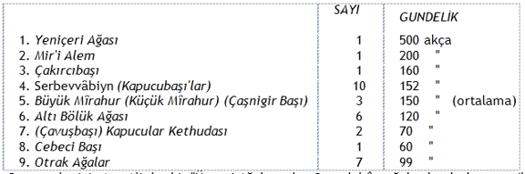
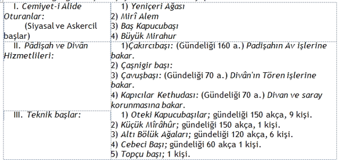
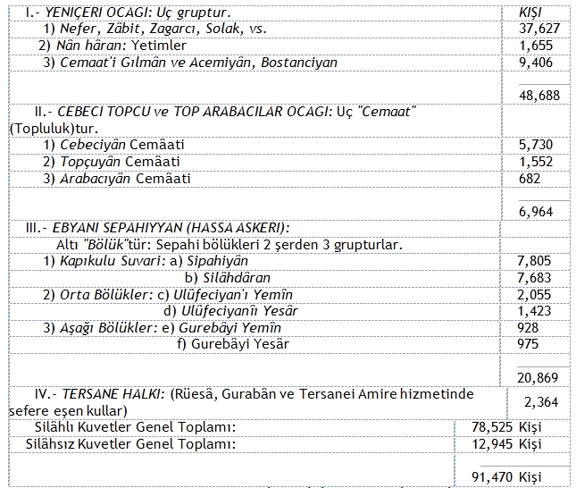

Osmanlı Devleti'nin yapısı, Antika KENT medeniyetlerinin yapısından kurulu zincirin son halkasıdır. Bu yapı Bizans tezi ile İslâm antitezinin rönesansından doğmuş bir sentezdir. İslâm Medeniyeti bile Roma Medeniyeti tezine karşı çıkmış bir antitezden başka bir şey değildir.
Osmanlılık doğarken, ortada ne ROMA Kent'inin, ne MEKKE-MEDİYNE Kentlerinin egemenliği kalmamıştır. Göçebe Osmanlının ise, yeni baştan KENT kuracak Tarihcil, Ekonomik ve Sosyal yapısı yoktur. İster istemez yıkılmış Greko-Romen ve Arabo-İslâm Medeniyetlerinin Kent kalıntıları ve gelenekleri ile yetinilecektir.
Gerek Bizans, gerek İslâm Medeniyetleri, ilk Orijinal Medeniyet kaynağı olan Kent'lerin açılmasındandoğmuş imparatorluklar aşamasına ulaşmış Devlet biçimlerini vermişlerdir. Bu biçim Devletin iki yapı karakteristiği vardır:
1- Kent geleneğini ayakta tutan Başkent karakteristiği;
2- Asil (ilk Toprak sahibi: Roma'da Patrici, Mekke'de Kureyş) geleneğini ayakta tutan Güdücülerkarakteristiği.
Osmanlıda BAŞKENT'tin adı, doğrudan doğruya Göçebe fâtih Askercil Demokrasi şefinin sivrilipPadişahlaşması yüzünden PAYİTAHT olmuştur. Reâya (güdülenler) adlı Halk yığınlarını Güdücü OsmanlıKadro'larına ise, Devlet Sınıfları (Sünûfu Devlet) denilmiştir.
Devlet Sınıfları'nın kaymağı Payitaht'ta oturur. Oradan MEMLEKET'i, Çoban toplumun içgüdüsü, gelenek-görenekleriyle güder. Devletin yapısı: ahtapotun kolları gibi uzatma organlarla Memleketi sarmıştır. Ama o yapının özü PAYİTAHT içinde yaşar. Padişah ve Saray gibi DÎVÂN adı verilen yürütme kurulları, yâni Hükûmet te, onun dalı, budağı olan Bürokrat Kadroları: Devlet Sınıfları da en çok Payitaht'ta kümelenir.
Onun için Devletin Yapısı Bölümünde iki ayrım olacaktır:
1- Padişah - Saray – DİVÂN
2- Devlet Sınıfları
Osmanlı Devleti'nin Yapısı, Tarihcil ve Sosyal nedenleri ile PADİŞAH çevresinde toplanır. Frenk barbarlığının son Padişahı olan XIV'üncü Louis: "Devlet demek, ben demekim" derken, yalan söylememiştir. Son kozunu oynayan Tarihcil krallık kurumunun "Kuğu çığlığı"nı atmıştır.
Elbet: Devlet demek Padişah demektir. Buna zavallı okuma, yazması bile bulunmayan Göçebe İlb'ler, şanlı şöhretli Gaazî'ler ne yapsın? Onlar gidişin parlak ve acıklı baş kuklacıklarından başka bir şey olmamışlardır. Olamazlardı da.
Padişah, Tarih çarklarına etiyle, kemiğiyle kaptırılmış, bütün insanlık haklarından (birkaç hayvanlıkhakkı abartılmak yolu ile) yoksul bırakılmış bir mutsuz kutlu zavallıdır. Çevresinde onu anasına, babasına, oğluna, kızına düşman canavar eden bir süslü zindan: SARAY ile, her sorumluluğu ve her cinayeti şeref diye sırtına yükleyen DİVÂN çöreklenmiştir. Oralarda yetiştirilen "Devlet Sınıfları"nı besleyip büyütmek için, yılanları emziren keçiye dönmüştür.
"Ne kendisi eyler rahat, ne halka verir huzûr."
Ama Toplum yaratığı insanoğludur bu. Alışmışı kudurmuştan betere çeviren Toplum, Padişahlıktan daha yüce ülkücül mutluluk bulunamayacağı yolunda öyle zehirli dolmalar yutturmuştur ki...
Geçtik Tarihöncesi Barbar kalıntılarını. "Kral Seud"lar, "Kral İdris"ler şöyle dursun. En kılkuyruk Hacıağa döküntüsü, hatta "Sosyalist" kesildiği zaman bile, eline yarım buçuk kıl kadar "Beğlik" geçse, hemen "Padişah" pozunda afi kesiyor. Babası eline geçse, "İktidar" göstermek için, ipe çekmekten "doğru" "Devrimci eylem" ve "Proletarya demokratlığı" bulamıyor.
Bu bir türlü "Modası geçmez" tutumların Tarihcil köklerini Padişah ile Saray ve Divân'larda izleyebiliriz. En "Sol" örgütlerde bile niçin "Sünûfü Devlet" yaratmak isteyen "Kapıkulu" içyüzümüzden utanmadığımız, orada gizlidir.
Hür Göçebe çadırının nasıl esir pazarı Saraya döndüğü ve o yiğit, eşit İlkel Sosyalizm insanlarının neden bunak şatafat tutsaklarına döndüğü Devletin Doğuşu Bölümünde az çok belgelendi. Devletin Yapısı Bölümünün Padişah-Saray-Divân Ayrımında yalnız Padişah-Saray ilişkileri daha yapı özelliklerine değecektir.
Dünya Mezarı, Sınıflaşma Anıtkabiri Saray, derebeğileşmiş Osmanlılığın kardeş kavgası ile kurulur. Kardeş kanı içme ilkesi ile Bizans yıkıntıları içinde özentiyle geliştirilir. Tabu adam Padişah, tabu ortam Sarayın oyuncağına döner. Bu korkunç ve acıklı oyuncak Has Oda'lar, Enderun'lar, Birûn'lar gibi kat kat bahçeler içinde "Sakal-ı Şerif"e döndürülür.
Bostan korkuluğu Padişah, kendi "Devlet Sınıfları"na karşı bile, ancak ilkin Türk Kapucubaşılar, sonra hadım Haremağası Darusseâde ağaları ile kendisini savunma ve koruma kaygularına düşer.
Osmanlı düzeninde Saray, ancak iktidar iyice Devletleştiği ölçüde saraylaştı. "Tam bağımsız" Osmanlı Hükümdarlığı kurulmadan Saray Saltanatı da sürülemezdi. İktidar için "Hükümdar nerede?" demiştik. Burada, Saltanat için de "Saray ne gezer?" demek yerinde olur.
Saltanat düşkünü Medeniyet yazar-bozarları, Osmanlılığı "Saray"da doğmuş, "Saray"sız olmaz bir Derebeğileşmiş Tefeci-Bezirgân bunağı gibi göstermeyi pek severler. Aslında "Saray": her yerde, her zaman Medeniyet'in dünya "Mezarı"dır.
Bütün Antika Medeniyetler, yarattıkları kanlı Sosyal Sınıf Savaşı yüzünden, "Mezar"ı dünya Sarayından çok süslemişler, ve "Saray"ı, halktan kopuk, tabulaştırılmış ve tanrılaştırılmış zavallı "Baş"lara "Belâ" bir dünya Mezarı durumuna sokmuşlardır.
Sınıflı Toplum yeryüzünde kaldıkça bunun başka türlü olması ne görülmüş, ne görülecektir. Devlet, toplumun üstüne sivrilen bir silâhlı - cezaevli örgütcül tekel oldukça, üst-sınıflar zûlme, alt-sınıflarsoysuzlaşmaya mahkûmdur. İnsanoğlu Toplumu bir Hapisane kılığına sokmuştur. Alt-sınıflar dünya Mezarı Bodrumların "pis Cezaevinde" mi kalıyorlar. Üst-sınıflar da gene kendilerine kapalı bir dünya Mezarı yaptıkları Sarayların "süslü Cezaevinde" yaşarlar.
Bu bakımdan, silâhlı, eşit, gerçekten hür İlkel komuna insanı Göçebe Türk'ün, Medeniyet sürüleri içine girer girmez "Saray" yaşantısına büyük bir özenti duymayacağı kendiliğinden anlaşılır. Ancak özenmiş, özenmemiş ikinci meseledir. Osmanlı için, ilk Gaazilik çağlarında, "Saray" diye ne bir olay, ne bir kavram yoktur. İlk Osmanlının "Saray"ı bir Hapisane saydığı da bütün davranışlarından bellidir.
"Saray" nedir? Siyasî iktidar Başını, halkın senli-benliliğinden uzak tutmak bahanesiyle halka düşman etmek için kurulmuş bir şatafatlı tuzaktır. Orada doğan, büyüyen insan, kendisini öteki insanlardan bambaşka bir yaratık durumunda bulur. Halk ta kendisine o gözle bakar.
Bu durum, Tarihöncesi Toplumun Tanrı-Tapınak gelenek ve göreneklerinden kalmadır. İlk Sümer Kent'lerinde, "Kahramanların Ruhu" tanrılaştırılıp Ziggurat tepesine oturtulmuştur. İlk Ziggurat, dağsız taşsız Irak düz bataklığı ortasında, balçık ve ziftten kat kat yükseltilmiş yapma tepeciktir. O tepeciğin üstü Tapınak olur. İçinde oturan Tanrı olur. Bu Halktan ayrılışın ilk kutsal senbolleşmesidir.
Saray: o Tapınak geleneğinden; Şah, Padişah: o Tanrı göreneğinden tıpa tıp taklit edilmiştir. Egemen sınıflar, Siyasi İktidar'larını, popüler (halkça benimsenmiş) bir Kutsallık perdesi altında dokunulmazkılmak için: o Tapınak-Tanrı gelenek-göreneklerini, bir zaman Tarihöncesinde doğarlarken, yerden göğe çıkartmışlardı. Şimdi Sınıflı Medeniyette bu yol gökten yere indirirler: Saray-Şah biçimine sokarlar.
Amaç yahut Eğilim apaçıktır: İnsanlığın sınıflara bölünüşünü bir daha geri dönülmez biçimlerde dondurup ebedîleştirmek, meşrûlaştırmak, kutsallaştırmaktır. Antika Toplumla Sosyal Sınıf Bölümü utançsızca elle tutulur biçimde objektifleştirilir ve somutlaştırılırdı. Bu Saray-Şah olurdu.
Demek bir yerde Saray ve Şah bulundu mu, orada kesince Sosyal Sınıflar bölümlenmiş demektir. O sınıflara parçalanışın, sınıfları birbirine düşürüşün ve toplum içinde insanı insana düşman edişinAnıtkabiri: Saray'dır. Bu "hazır mezarın bayat ölüsü" insan, yaşıyan Devletin canlı Başkanı olan Kişi:Şah, Padişah ve ilh. adlarını bir matahmış gibi takınır.
Bugün bize saçma ve gülünç gelen çalım, poz, Saray heveslileri hâlâ az mıdır?
Osmanlının kendisini Saray mezarına gömmesi için, ilk kurduğu Devletin yıkılması gerekmiştir, denilebilir. İlk "Saray"ın akla gelmesi Edirne'nin fethinden sonra olmuştur. Akla gelenin memlekette gerçekleşmesi ise, 50 yıla yakın bir süre uzayıp gitmiştir. Bursa Sarayı için:
"Temel 1365 yılında atıldı. İnşaat ise ancak 1417 yılında sona erdi."{132} denir. Besbelli, Osmanlı'nın Saray'a gönlü bir türlü yatmamıştır. Adına "Edirne Eski Sarayı" denilen, Selimiye civarındaki Kavak Meydanı'na kurulmuş bir yapıdan söz edilir. Dikdörtgen biçimli, kuzeyde demir kapılı olduğu söylenir. Ancak bu yapının da "Saray" olması için, Timur'un "Fetret" (Anarşi) çağını açması, yâni ilk Osmanlı Devletinin yıkılması gerektirmiştir.
"Fetret" çağına dek Osmanlı Padişahları için sürekli bir "Payitaht" bile olmamıştır. Kimi Edirne'de, kimi Bursa'da kalmışlardır. "Fetret"te yeniden Bursa'ya dönülmüştür. Onun için, kardeş kavgaları başlamadan, "Edirne Eski Sarayı", saraydan başka herşeydir. Klâsik Tarihe göre "Edirne Eski Sarayı"nı:
"İlk tevsi eden Yıldırım'ın oğlu İsâ Çelebi'dir. Musâ Çelebi, Sarayı teşkil eden müteaddit binaların ve bahçelerin etrafını 15 metre kadar yükseklikte bir surla çevirmiştir."{133}
Sursuz Saray olur mu? Demek İkinci Osmanlı Devletinden önce ortada pek öyle "Saray" denecek nesne yok, dağınık bir sıra yapılar ve bahçeler vardır.
Edirne'yi ilk oturaklıca Başkent (Payitaht) yapan Padişah Murat II oldu.1450 yılı (Osmanlı kuruluşundan 150 yıl sonra) Tunca ırmağı kıyısında "Yeni Edirne Sarayı" denen köşk kuruldu. Mehmet II (Fâtih) İstanbul'u fethettikten sonra da:
"Uzun müddet burada ikamet etmiş, hatta oğulları Mustafa ve Beyazit'in sünnetlerini burada yaptırmıştır."{134}
Bir tesadüf mü? Yoksa ortadan kaldırmak mı? Ne yazık ki, o ilk Osmanlı sarayı kökünden kazındı. Yapıldığından 7 yıl geçmemişti ki, 1457 yılı "Tamamen yandı"!.. Sonra "Kısmen müceddeden inşa" edildi. Ama bu artık, iyice Bizans taklidi oldu. "Hünkâr Bahçesi Sarayı" 6000 İç oğlanı, 400-500 Bostancısı ile Saraylaştı.
Bu Saray: Enderun'u, Birûn'u, Harem'i ile İstanbul'daki Saraylara döndü. Enderun'da: Hazine, "Hırka'i Seâdet", Has Oda, Bâbüsseâde Ağası Dairesi, Baltacı koğuşları türedi. Hünkâr Bahçesi, Bâb'ı Hümâyun'un güneyinde idi. Yanında Adalet Kasrı vardı. Kuzeyde, şimdiki köylü usulü ile, Has Ahırlar kurulu idi. Ayrı, büyük daireleriyle Harem'i (Derebeyi Şatolarını saran su hendekleri gibi) Tunca suyu çepeçevriliyordu.
Tek sözle, Fâtih'ten (Bizans etkisinden) önce Saray, tıpkı Payitaht gibi, Devlet gibi Göçebeliği ile övünebilirdi..
Bir hakkı yemeyelim. En çökkün Bizans çukuruna düşmüş Osmanlı çağının Saltanat yani Devlet sistemi, Modern Emperyalizm çağındaki kapitalist Devlet ve Devletçilik sistemi yanında zemzemle yıkanmıştır. Çünkü çok daha az pahalı, çok daha az lüks, çok daha az sinsi ve aldatıcıdır. Çok daha az sosyal eşitsizliğin ve sömürünün senbolüdür.
Ancak SİSTEM olarak bugünkünün tohumu oradan kaldığı için, İlkel Göçebeliğin son kırıntılarını da kökünden silip atan Antika İmparatorluğa ve "Asyalı" denilen müstebitliğe geçiş ilginçtir. Bu geçişte, bilinen nedenlerle, Padişahın Tabulaştırılması, herşeyin Kan bağlarından çıktığı ve Kişilerle temsil edildiği o çağlar için, Örgütcil Devletleşme'nin tek yoludur.
Fâtih, Saltanatının son deminde bu yolun inancına ve kendisince bilincine varmıştır. Bundan en klâsik anlamı ile SARAY ve onun İDARESİ ortaya çıkmıştır.
Saray, tabulaşmış üstinsanı (Padişahı), zamanı için pek imrenilecek bir Hapisane içinde, her türlü dış saldırılara karşı koruma ve savunma sistemidir. Savunulan iki kutsal şey vardı:
1- Tabu Kişi (Padişah);
2-Tabu Ortam (Sarayın kendisi)...
Padişah adlı Tabu kişi'yi savunan Örgütcil Devletleşme aracına, Fâtih "HAS ODA" diyor. Ancak özel ve genel amaç o tabu-kişi değildir. Kişiyi insanüstüleştirerek, egemen sosyal sınıfların çıkarlarına ve eğilimlerine en uygun, en sürekli biçimde üretip kullanmaya yarayacak olan araç, asıl amaçtır. Bu araçSarayın Kendisi olan Tabu Ortam'dır. Osmanlı ağzında, Tabu Ortamı, Sarayın kendisini temsil eden başlıca yaman araç "ENDERUN" adını alır. Demek Sarayda iki kurum vardır:
1- Tabu Kişi kurumu: Has Oda;
2- Tabu Ortam kurumu: Enderun.
"Oda", şimdiki Türkçe'ye geçen bir evin en sürekli oturulur bölümü anlamına gelmez. Şimdiki "Ticaret Odası" termindeki "Oda" gibi bir sosyal örgüttür. "Has Oda", Örgütcil Devletleşme yönünde yaratılmış en keskin kurumdur. Fâtih Mehmet, o bıçak kullanır gibi konuşmasıyla der ki:
"Bir HAS ODASI yapılmıştır. 32 adet HAS ODA OĞLANI ile içinde biri SİLÂHDAR ve biri RİKÂBDAR ve biri ÇOKADAR ve biri DÜLBEND OĞLANI ola."{135}
Has Odası, böylesine kısa, kestirme bir kurumdur. Haftada beş altı gün lâhana çorbası ile geçinen bir sarayda, 4 başlı tam birer Manga (9'ar kişi bölümlü) 32 adam nedir? Bugün en sünepe Hacıağa, bir Emperyalist Evren Savaşında Devlelçiliğimize el vererek başardığı "Kupon" kaçakçılığı ve vurgunculuk ile: "lebiderya"da kurduğu köşke 32 uşağı az görür.
Ulu Peygamberin övgüsünü yaptığı koca "Konstantiniyye"yi zaptedip, Tarihte (şu veya bu ulusçuk sınırları içinde değil) insanlık ölçüsünde gerçekten ÇIĞIR açmış Fâtih Mehmet, Bizans lüksünün son perdesine büründüm sandığı gün: "32 tane"cik "Has Oda Oğlanı" ile yetinebiliyor.
Bu 4 manga insanın görevleri nedir? Değme modern kokotun yetinemeyeceği denli az, dört çeşit"hizmet". Bu hizmetleri, Fâtih'ten sonra (150 yıl sonra) anlatanlardan öğreniyoruz.
Silâhdar: (Silah tutan): "Padişahın kılıcının muhafızı."{136}
Silâhdar başında zülküflü Üsküf, elinde Kılınç, Padişahın sağında gider. Her gün "Mabeyn"de. "Telhisat teâtisi ve sair hizemât'ı seniyye" görür. "Enderûn ricalinin Arz'larına vasıta" olur. Yalnız bu iki görev Silâhdarı, Has Oda'nın da Enderûn'un da üstüne çıkarır:
1- Padişahın mahrem akıl hocasıdır;
2- Adam seçme ona düşer.
Ulûfe'si (gündeliği) 20 akçadır (32 gram gümüş). Ayrıca yılda 4 tane "Câme'i Hân'ı Salyane"si vardır.
Silâhdarlar: "Sonra Dârüsseâde takımından mâidâki Enderûn'luların zâbiti olarak son derece seçkinleştiler."{137}
Bu adamlar, yetişe yetişe,Mısır gibi önemli Eyâlet'lere Vâli, Derya Kaptanı, Kubbe Veziri, Sadrâzamoldular.
Rikâbdar: (Üzengi tutan): "Padişah tenhaca ata binerek bahçe vesair seyrine çıkarken (Üzengi ağaları bulunamadığından) rikâb'ı Hümâyûn'u tutar."{138}
Sırada, Silâhdardan sonra, Çokadar'dan ön gelirken, sonraları geri kalır.
Ulûfe'si gene 20 akça. "Câme'i Salyane"si 4.
Çokadar: Mevlût ve başka resmî günlerde "Maiyyet'i Hümâyûn"da Padişahın yağmurluğunu tutar ve sağ yanında yürür. Başka vakitlerde özel dairesinde oturur. Silâhdar yoksa, ona vekillik eder. (Çokadar da yoksa vekâlet Rikâbdar'a düşer.)
Ulûfe'si 20 akça. "Câme'i Salyane": 4.
Dülbend Oğlanı: buna Acemce "Dülbend gulâmı", Türkçe "Tülbent Ağası" da denir. İlkin, o zamanlar giysinin en önemlisi olan Sarık'ları ve çamaşırları temizlemek ve idare etmek işine bakar.
"Saltanat" ilerledikçe, yâni Padişahlar lüks batağına ve süse boğuldukça, Tülbent Ağalarının çeşitleri ve sayıları da çoğalacaktır.
Sarıkcıbaşı: "ihdas" edilince, Sarık işi ona düşer.
Dülbend Ağası: "Hırka'i Seâdet" dairesi temizliği vb. işlere bakar. Rikâbdar'ın "Mâdûn mülâzımı" (alt subayı) olur.
Sonra: Miftah Ağası (Anahtar)
Peşkir Ağası... çıkar
ENDERUN, Padişahın emrinde görünür. Ama Kişi kurumu olmaktan öte bir Saray kurumudur. Zamanla Padişahı da kıvırıp bükecek, gerekirse Padişahlığı yürütmek için Padişahları bile yok edecektir.
Enderûn işleri: gene hep Padişahı ve çevresini giydirip kuşatmak ve besleyip korumak görevi biçimindedir. Ancak görevin uygulanışı ve sürekliliği göz önüne serilince, Sarayın Ekonomik, Politik veAskercil işleri, Padişahın kişiliği üstüne de ağır basar ve objektifleşir.
"Has Oda oğlan"ları gibi, Enderûn Ağaları da dört başlı bir sistem örgütüdürler:
1- Odabaşı,
2-Hazinedarbaşı,
3- Kilârcıbaşı,
4- Sarây'ı amire Ağası... Bunlara Acemce "Enderûn Ağalar", Türkçe "İç Ağaları" denir.
Odabaşı: "Padişahı giydirip soymaya memur"dur. "'Kapıağası PAYE'sinde ise de görünüşte ona tâbi"dir."Ekseriya iç oğlanlarından", kimi ise Hadım Ağaları'ndan seçilirler.
Ulûfe'leri 60 akçadır. "Câme'i Hâss'ı Padişahîden (özel Padişah giysisinden) yılda 5 parça esvap"ları olur.
Hazinedarbaşı: "Hazine'i Hümâyun'un ve Hademelerinin zâbiti"dir. "Padişahın Destâr (sarık) ve Seccadesi dahi elinde bulunur."
Böylece Padişah adına, Padişahın bütün madde varı Sarayın bir İç Ağası elinde tutulur.
Hazinedarbaşı: Akağalar'dan seçilir.
Kilârcıbaşı: Mutfağa bakar. Şeker ve tatlı yapar. (Osmanlıda herşey askercil olduğundan): "Has Kilâr"hademelerinin "âmiri", komutanı'dır.
Saray'ı Âmire (Bayındır Saray) Ağası: "Enderun'u Hümâyun"daki "Has" ve "Büyük" ve "Küçük" denilen odaların ve tümüyle Saray'ın muhafızıdır. "Muhafız Alay Komutanı" gibi bir şeydir.
Ancak şimdiki "Muhafız Alayı" Başkentin en korkunç silâhlı gücü ve tümen kadar kalabalık iken, Saray Muhafızının maiyetinde 40 Akağa bulunur.
Toparlanırsa, Saray'da Padişahın giyinmesi ve soyunması kadar "mahrem" işlerini Odabaşı kollar. Aynı Padişahın boğazından geçecek acı tatlı yeyip içtiği Kilârcıbaşı'dan sorulur. Kilârcıbaşı: "Saray" isterse, Padişahı her zaman zehirleyebilir. Odabaşı: gene "Saray" isterse, Padişahı çırılçıplak ve kıskıvrak yakalatabilir.
Hazinedarbaşı: Saray'ın ekonomik varını; Sarây'ı Âmire Ağası: Saray'ın silâhlı gücünü elinde tutar.
Sarayın bu dört adamı karar verir, yahut kandırılırsa, Padişah'ın kişiliği olmamışa dönebilir. Ve çok dönmüştür.
Has Oda'nın başında kişi olarak Padişah bulunur. Ayrıca bir başa yer kalmaz. Enderun, Padişahın ötesinde objektif bir kurumdur: Sarayın kendisidir. Sarayın kendisinin başı: KAPUCUBAŞI olur. Ona,"Bâbüsseâde Ağası", "Bâbüsseâdetül Âliyye Ağası" da denir.
Kapucubaşı: (Bâbüsseâde Ağası: Mutluluk Kapısı Ağası): "Sarayda Hadımağalarının zâbiti"dir. "Bilcümle ENDERUN memuriyetlerinin âmiri", "Harem ve umum Daire'i Hümâyûn'un zapt ve raptına memur"kişidir.
Kapucubaşı, SARAY'da kişiliği olmayan, anonim Padişah gibi bir şeydir. İmparatorluk derebeğileştikçe bu durumun önemi ve etkisi daha duruca ortaya çıkacakur.
İmparatorluk geliştikçe bir ilginç olay daha suyun yüzüne çıkacaktır. G.990 (D.1582) yılı Murat III bir Saray görevlisi daha "İhdâs" edecektir: "DARÜSSEÂDET ÜŞŞERİFE AĞASI"! Bu iki görevli, birbirine karıştırılmamalıdır. "Babüsseâdetül Âliyye" (Yüce Mutluluk Kapısı) Ağası denilen Kapı ağası başka, "Darüsseâdetüşşeriyfe" (Şerefli Mutluluk Evi) Ağası başka şeydir. Bu sonuncu, sonradan (Osmanlı soysuzlaşması, dolayısı ile Türkçe'nin kötülenmesi başladığı zaman) ortaya çıkarıldığı için, adı "Odabaşı"nınki gibi Öz-Türkçe değildir. Kısaca "Darüsseâde Ağası" diye anılır.
Dârüsseâde (Mutluluk Evi) Ağası: Vakti ile Kapu Ağası'nın baktığı kutsal gelirlere bakmak üzere ayrılır. Baktığı alan:
1) "Harem'i Hümâyûn Evkafı",
2) "Evkaf Muhasebeciliği"
3) "Evkaaf'ı Hümâyûn Müfettişliği" işleridir.
Ne çıkar bu "Evkaf"çılıktan? "Evkaf" konusuna gelince göreceğiz. Evkaf: Kamu mülkiyetinin, yâni eskiden Ümmet, yeni Millet malları denilen minârenin egemen sosyal sınıflarca çalınışında kullanılmış kılıftır. İmparatorluk derebeğileştikçe, Kamu mallarının çalınışı artmış, Evkaflar çoğalmıştır. Dolayısı ile de en büyük gelirleri temsil eden Evkaf alanı, Türkiye ekonomisine ve ister istemez Türkiye polilikasına ağır basmıştır.
Ve, Bilimcil Sosyalizmin Ekonomik Determinizm adlı prensibi bir yol daha hükmünü yürütmüştür: Evkafa el atanların önemi gittikçe artmıştır. Dolayısı ile, ilkin Kapıağası'nın yamağı gibi duran Dârüsseâde (Mutluluk Evi) Ağası, yavaş yavaş Babüsseâde (Mutluluk Kapısı) Ağası'nı aşmıştır. "Ev", "Kapı"ya baskın çıkmıştır.
"Dârüsseâdetüşşerife" Ağası:
"Bu suretle Saray'ı Hümâyûn'un birinci zâbiti olmuş ve bâ'de bâ'din (sonranın sonrası) Bâbüsseâde Ağalığı dahi anın emri altına girip önemini yitirmiş"tir.{139}
Sonuçta, cinsiyeti belli Ak derili insanların yerine, daha uysal ve kişiliksiz bırakılmış Hadım'lar ile Karaderililer uygun kul sayılmışlardır. Bu prose, Saray'da sağlam erkeğin ve Ak adamın köküne kibrit suyu dökmüştür:
"İlkin AKAĞLAR mevki'i iyzar'da (azizlenme durumunda) bulunup, sonra Darüsseâde Ağalarıyle ZENCİ AĞALAR o yüce mevkii hâiz (ele geçirir) olmuşlardır. HAZİNEDAR, HAZİNE VEKİLİ, BAŞ MUHASİP, VÂLİDE SULTAN BAŞ AĞASI yüksek mesnetlere sahip çıkmışlardır."{140}
Padişah'la Divân'ların ilişkisi, Osmanlı Devlet yapısı içinde şimdi Hükûmet adı verilen yürütme kurullarının işleyişi demektir. Padişah, bütün Devletin canlı putu, ayaklı senbolu olunca, Yasama yetkisi de Yürütme yetkisi de padişahta toplanır.
Bu yetkiler aşağıdan Padişaha "Arz"larla gelişir, yukarıdan Padişahın "Buyuru"larıyla Kanun'laşır. İkişerli 4 çift organlarla: (Müşavere-Evlât Ölümü), (Divân-Bayram), (Cemiyet'i Âlî-Sefer), (Divân Taâmı-Bahçe) biçimlenip uygulanır.
Padişaha yaklaşma, ve el öpüş, Divâna giriş ve oturuş, "Nevbet" tutuş, Mütalea veriş, Emir ve Ferman alış.. bunların hepsi ayrı ayrı, zincirleme Tören-Şölenlerle Devlet ve Hükûmet işlerinin yoluna konulması ve yürütülmesi olur.
İlkel Toplumda Babahan nasıl önce Kahraman, sonra Tanrı olduysa, Hristiyanlıkta kişi olarak İsâ nasıl Allah demekse, tıpkı öyle, Osmanlılıkta da kişi olan Padişah demek Devlet demektir. Orada Devlete kapitalizmin giydirdiği insanüstü Soyut ve Esrarlı hiçbir yan katılmaz. Etiyle, kemiğiyle bir insan Padişah kılığında som Devlettir.
Bu karakter Osmanlılığın bir aşiretten türemiş, "hüdayinâbit" olarak çıkmış olmasından ileri gelir. Bizans kanunları, İslâm Şeriâtı Osmanlı yapısına giderek hayli şeyler kattı. Bu katkılar Fâtih'e dek Devletle Padişahın aynı şey oluşunu gideremedi. Devlet mekanizmasının işleyişi, en itçil kişi ilişkileri biçiminde oldu.
"Memleket" (Mülk alanı) denilen Osmanlı varlığının tabanı, Padişahın mülkü gibi konuldu. Padişahla Memleket ilişkileri, Padişaha bir problemi Arz etmek ve Padişahtan o problemin çözümü için Buyuru almak ile oldu. Devlet mekanizmaları ve organları: Padişaha Arz etmek ve Padişahtan Buyrultu almak yoluyla biçimlendi ve işledi.
Nasıl Padişah demek Devlet demekse, tıpkı öyle Buyrultu (Ferman) demek Kanun demektir. Devletin bütün kuralları, kurulları Padişah buyruğundan kaynak alır, Cumhuriyet çağına dek, en kıtıpiyoz memurun Kanundan üstün Buyurma eğilimi, ve kanundan çok Üstünün (mâfevk'inin) buyurusuna uyuşu o yapının gelenek, göreneğidir.
Padişahın Arz ve Buyuru görevleri, diyalektik çelişkinin iki kutbu gibi, çevreden merkeze, merkezden çevreye karşılıklı etki-tepki yaparak işler.
Arz: aşağıdan yukarıya işleyen örgütcül ilişkidir. Arz'ın "Bizzat" ve "Nâme ile" yapılan iki biçimini gördük. Devlet başkanı Padişah, muhitten merkeze gelen Arz yolu ile üç alandan bilgi edinir: 1- Hükûmetten, 2- Saraydan, 3- Taşradan.
1) Başta HÜKÛMET diyebileceğimiz Sadrâzam, Kazasker, Defterdarlar kanalından "Bizzat" bilgi toplanır. Sadrâzam en geniş anlamda POLİTİK konuları, Kazasker SOSYAL ve ASKERCİL konuları, Defterdar EKONOMİK konuları Arz eder.
2) Sonra SARAY diyebileceğimiz haber alma alanı gelir. Bu alanda Has Oda personeli, Padişahla her gün ve hemen her an temastadır.
O yüzden, hele Silâhdar adlı kılıçlılar, bütün Devlet, Toplum, Politika ve Reform işlerinde Padişahın hem Sır ortağı, hem Akıl Hocası durumundadır.
Türkiye'nin en önemli iki büyük Reform çabasında iki Silâhdar başrolü oynar. Murat IV'ün akıl hocası Koçi Bey'dir. Selim III'ün akıl hocası Koca Silâhtar'dır.
Has Oda, Subjektif Saraydır. Asıl Objektif Saray Enderun adını alır. Enderun'un başı Kapıağası'dır. Odabaşı, Kapıağasını yalnız ve bağımsız bırakmamak için tutulmuş bir alttır. Hazinedarbaşı ile Kilârcıbaşı Sarayın EKONOMİK başlarıdır. "Sarây'ı Âmire Ağası" Sarayın ASKERCİL başıdır.
Sonraları çıkıp hepsine baskın olan Darüsseâde Ağası ile bütün bu ENDERUN alanı, Hükûmetten tümüyle apayrı, bağımsız ve doğrudan doğruya Padişah emrinde, Padişaha etken bir örgüttür. Ve Sadrâzam kadar Devlet başkanına sözle Arz etme hak ve yetkisini taşır.
3) Üçüncü Arz organı, üst TAŞRA İDARESİ dünyasıdır. Onlar: Beylerbeğiler, Ümerâ (komutanlar) veKudzât (kadılar)dır. Beylerbeğiler, bütünü ile büyük TOPRAK EKONOMİ ve POLİTİKA'sını güderler.Ümerâ, bütünü ile SİLAHLI KUVVETLERİ güderler. Kadılar, hem İlmiye (Bilim, Hukuk, Şeriat adamları), hem Mülkiye (Eyâlet ve Sancaktan küçük taşra idare cihazları) karışımı olarak SOSYAL POLİTİKA'yı güderler.
Bunlar da, Hükûmet ile Saray dışından Padişaha doğrudan doğruya "Arz" yetkisine sahiptirler. Yalnız buArz'larını "bizzat" sözlü olarak yapamazlar; yazılı "Nâme" (Mektup) biçiminde sunarlar.
Buyuru: Osmanlı Devlet örgütünün yukarıdan aşağıya işleyen mekanizmasıdır.
Yukarıdan aşağıya etken olan buyuru organları, bütün Devlet sistemi gibi gene hep Padişah adlı kişiliğin çevresinde, emrinde toplanır. Onun için, Padişahın yaşantısı ve davranışı ile bu organların işleyişi içiçe girmiş bulunurlar. Ve Kişi de Devlet te PADİŞAH demek olduğundan, ARZ organları gibi BUYURU organları da, kuruluşları, işleyişleri bakımından hem olağanüstü karmaşık, hem olağanüstü basit'tirler.
Padişahın buyrultusu nasıl biçimlenir? Padişahın Düşünce - Davranışları ile. Öyleyse, Osmanlı Devleti'nde "BUYURU"nun ne ve nasıl olduğunu kavramak istedik mi, Padişahın: varsa Düşüncesine, yoksa Davranışına bakmak yeter. Gereksiz spekülâsyonlara yer yoktur. Daha doğrusu, Padişah ilkin yazıp okuması bile bulunmayan bir Savaşçıdır; sonraları Fâtih gibi zamâne biliminde hayli yetişkin olduğu zaman bile, düşünce'yi Ulemâ'ya bırakır. O yalnız DAVRANIR.
Pratikçe, Osmanlılıkta kaç türlü Buyuru mekanizması bulunduğu öğrenilmek istendi mi, Padişahın kaç türlü Davranış içinde bulunduğunu göz önüne getirmek gerekir. Padişahın ve Devletinin, tek sözle SALTANATIN kaç türlü DAVRANIŞI olur? Buna en duru ve basit biçimiyle yetkili karşılığı Fâtih'in kendisi verir.
Fâtih Mehmet, söyleyerek yazdırdığı "Kanunname"sinde ve ondan sonra "Evlâd'ı Kiram"ının bu Kanunname'yi "İslâha sâ'y" (düzeltmeye çaba) gösterişlerinde, Devlet işi olarak sayılan Padişahın davranışları 8 türde toplanır. Bu 8 türün ilk dördü ÖZEL olarak Padişahın KİŞİLİĞİ ile ilgili görünür:
1-Evlât Ölümü,
2- Bayram,
3- Bahçe,
4- Sefer; sonraki dördü GENEL olarak Devletin ORGANLARI ile ilgili görünür:
1- Müşâvere,
2- Divân,
3- Cemiyet'i Âli,
4- Divân Taâmı.
Bu 8 Osmanlı Padişah-Devlet olayı Organ mıdır, Görev mi? Hem organ, hem görevdir. Daha doğrusu: Görev-Organ'dır. 8 Görev-Organı karşılıklı sıralarıyla alt alta dizersek, aralarında şaşılacak bir Karşıtlık-Paralellik bulunduğunu görmezlikten gelemeyiz:
GENEL: Müşâvere - Divân - Cemiyet'i Âli - Divân Taâmı
ÖZEL: Evlâd Ölümü - Bayram - Sefer - Bahçe
Bu dörderli iki sıra olaylara bugünkü (Burjuva) kafamızla bakarsak, aralarında hiçbir ilişki göremeyiz. Olayları zamanının ortamı içinde karşılaştırırsak, kazın ayağı hiç te öyle değildir. Onun için, iki sıra Görev- Organları alt alta gelen ikişerli ilişkileri içinde ele almak daha ilginç olur.
"Müşâvere", Devletin en sivri tepesinde ve önemli konuların en gizli biçimde incelenip karara bağlandığı bir büyük Görev-Organdır. Padişahın bir oğlunun ölümü ise kişicil, olağan, doğal ve küçükolaydır. Bunlar arasında hangi paralellik aranabilir?
Önce bu paralelliği bizim icat etmediğimizi; sonra onu bizzat Fâtih Mehmed'in, sonraları ne denileceğini akıl köşesinden geçirmeksizin olduğu gibi koyduğunu hatırlayalım.
Devlet Başkanı Padişahla, Hükûmet denilebilecek en kodaman Politika, Toplum ve Ekonomi başlarının birkaç basamaklı toplantıları vardır. Bunlardan hiçbirisi Fâtih Mehmet'çe Müşâvere ve Evlâd Ölümü kertesinde müthiş SIR ve ÖNEM içinde konulmamıştır.
Müşâvere (DANIŞIM) nedir? Devletin en önemli işlerinin, Devletin kişileri arasında en gizli biçimde toplanarak ele alınmasıdır. Edinilmiş Arz'lar ışığında, en su götürmez Buyurultu (Ferman)lara bağlanmasıdır. Müşâverenin önemi kutsallık kertesine erişir. Çünkü Allah, Kur'ân ı Kerim'inde bütün Müslümanlar her işlerinde: "Feşâvirû" buyurmuştur: "Ve birbirinize DANIŞINIZ!"
Kanunâme'de Müşâvere için yalnız kesin bir iki söz geçer.
"Umur'u Saltanatı" (Devlet işlerini) Danışmada Padişah sırf Politik başlara: Vezir'i Âzam ile Vezirler'e veEkonomik başlara: Defterdarlar'a başvurur. Bu danışmanın hiç şakası yoktur: Hemen kılıç vuruşu ile kestirip atar:
"Anlardan (yâni Vezirler ve Defterdarlardan) gayri kimesne vâkıf olmıya"{141}
Buna itiraz edecek kimse anasından doğmamıştır. Devlet işleri yalnız Padişahla Politika ve Ekonomi Başları arasında eleştirilip çözüme bağlanan sırlardandır.
"Evlât Ölümü" ne demektir? Padişahın dölünden gelmiş kimselerin yaşamaktan kalması demektir. İlk bakışta, bugünkü insan için, bunu Müşâvere kertesinde dramatize edecek ne var? Fâtih Mehmet onu en az Müşâvere kertesinde dramatize edip önemsemiştir. Kanunnâme, açık seçik konuyu:
"Evlâdımın ölüsüne hazır olan Vüzera, Kazaskerler ve Defterdarlar" biçiminde koyar.
Kanun koyucu Fâtih Mehmed'in kafasında hiçbir şey örgütler hiyerarşisi kuralı dışına çıkamaz.Müşâvere'ye Devletin en büyük Politik ve Ekonomik başlarını almıştı. "Evlâdının ölüsüne" onlardan başka Ordu- Adâlet karışımı sosyal ve askercil hukuk başlarını da lütfen kabul eder. Neden?
Çünkü Evlât ölüsünde Silâh'ın ve Adâlet'in de bir sözü olacaktır. Hiç değilse Şeriat'ça bir ölü Kılıç ve Hak adamlarından saklanamaz. Ölen kişi ister "Allahın emrile", ister "Kılıcın demirile" ölsün, "İlmiye"nin elinden geçecektir.
Buradaki yaman Devlet sırrı nereden geliyor? Belli: "Karındaşların nizâm'ı âlem içün katletmek"prensibi, yalnız kardeşler arasında değil, babalarla oğullar, hatta dedelerle torunlar arasında bile yürürlüktedir. "Saltanat", Padişahlık Tahtına sivrilmeyi, bir Tarihcil-Sosyal nedene bağlamaz: Sultan'ın Kan'ında ve dölünde gizli, anlaşılmaz bir büyüye bağlar. O zaman, Padişahın kendisi gibi dölü de tabulaşır, devletleşir, sırlaşır.
O yüzden Saltanat uğrunda sivrilen insanlar, kıran kırana boğazlaşırlar. Bu uğurda düşenlerin "ölüsü", ister istemez "Umûr'u Saltanat" sırasına girer. Ve "işi" yalnız Padişah ile birinci kertede (Politik - Ekonomik - Sosyal) üç kategori Başlardan başkası ele alamaz olur.
"Müşâvere" ile "Evlât Ölüsü" gibi öteki: (Divân-Bayram), (Cemiyet'i Âli - Sefer), (Divân Taâmı- Bostan) ikilileri arasındaki paralellikler de, az çok kendiliğinden anlaşılabilir.
Herkese "sır" olan Müşâvere'den sonra, Devletin en büyük Görev-Organ'ı "Divân-ı Hümâyun"dur."Osmanlı Beğliğinde Hükûmeti, yani İcra Kuvvetini Divân temsil eder"{142}
Divân: bilinen Devlet büyüklerinin, hiç değilse ilk zamanlar, halkla doğrudan doğruya ve toplu olaraktemas edip, memleket ekonomisini, politikasını, hatta adliyesini en yetkili ölçüde günlük somut problemler biçiminde ele alma görev-organıdır. "Divân herkese vasıtasız açıktı."{143}
Hümâyun: Osmanlı Türklerince tanımlanması pek yapılmamış ise de, anlamı tartışmasız kabul edilmiş birefsane kuşunun adı sayılır. Bu mitolojik kuşun başı, gagası, kanatları, ayakları pek öyle yeryüzünde görülmüşlere benzetilmez. Onu ne kimse görmüştür, ne kimse anlatabilir. Ancak varlığı su götürmez sayılır.
Toplum gerçeği bakımından Hümâyun, bugünkü modern terminolojide tıpatıp Totem adı verilen şeyintabulaşmış kendisinden başka bir şey olamaz. Besbelli Kayıhan'lıların Osmanoğulları, Orta Asya'dan buHümâyun totemi ile gelmişlerdir. Bütün başarıları, o "Hümâyun" adlı efsane kuşunun temsil ettiği Toplum ruhuna mal edilmiştir. Gaazilerin vura kıra ulaştıkları Saltanat mertebesi de "Hümâyun"un yüce katından başka bir şey sayılamamıştır.
Böyle erişilmez ulu, kutsal, esrarlı gücü temsil eden Divân'ı Hümâyun görev-organı, yüzyıllar boyu Padişah ve Hükûmeti ile Halkın buluşma katı bulmuştur. Fâtih onu kaldıramazdı. Kanunnâme ile çerçevelemek yolunu tuttu. O çerçeve içinde "Divân-ı Hümâyun" bir hiyerarşi düzenli Tören kılığına girdi.
Padişahın, ardında Saray, katıldığı çeşitli yürütme (icra) ve danışma (kanun) toplantıları içinde en önemlisi ve en sürekli-düzenli olanı Divân-ı Hümâyun'dur. Devlet, her sabah önce Allahın önüne çıkar, sonra Halkın önünde işlemeye başlar.
"Divân her gün sabah namazından sonra toplanır. Evelâ Halkın dilek ve şikâyetleri dinlenir. Sonra Devlet işleri görüşülürdü."{144}
İlkin Cumâ dışında her gün toplanılırdı. İstanbul alınıp ta Bizans etkisi başlayınca, Halkın önüne çıkmak seyrekleştirildi Haftanın yalnız: Cumartesi, Pazar, Pazartesi, Salı günleri Divân-ı Hümâyun'a gelindi.
Divân'da üç şey kotarılırdı:
1) Mütalea: İdare ve gelenek-görenek (örf) işlerinde Vezir; Şeriat, Hukuk işlerinde Kazasker; Maliye, Ekonomi işlerinde Defterdar açıklamasını yapardı. Ondan sonra "Emir" gelirdi.
2) Emir: Berat, Vazife, Yetki, Hak gibi imtiyaz bağışlamaları üzerine olurdu.
3) Ferman: Emir (buyurma) ve nehiy (yasaklama)lar üzerine çıkarılırdı.
Fâtih Mehmet töreni şöyle özetler:
"Divân'a her gün Vüzerâm ve Kazaskerlerim ve Defterdarlarım geldikte Çavuşbaşı ve Kapucular Kethudası önlerine düşüp istikbâl etsünler."{145}
Bu özel karşılayış töreni ile gelenler, Divân'da gelişigüzel oturamazlar. Zaten, İmparatorluğun hiçbir yerinde, hiçbir kimse, önceden belli olmayan ne bir davranışta bulunabilir, ne bir yerde oturabilir.
Bir yol yukarıda belirtilen Divân üyeleri kesinlikle sınırlı yetkililerdir. Bu yetkililerin gelip sırayla Padişah önünde Divâna girmeleri gibi, oturmaları da bir problemdir. Divânda oturmaya "SADR'A OTURMAK"denir. Ve Sadr'a Oturmak her babayiğitin harcı olmaktan çıkar, sıkı sıkıya Kanun konusudur. Fâtih, yaşlandıkça bu Divân düzeni üzerinde büsbütün Bizanskâri titizliklere alıştırılmış bulunur. Şöyle yazdırır Kanunnâme'sini:
"Divân Hümâyunda Sadır'da oturmak Vüzerâ'nın, Kadzaskerlerin ve Defterdarların ve Nişancıların yoludur."
Böylece Divân'ın doğal üyeleri bu dört başlı en büyük Devlet yetkilileridir: Vezir - Kazasker - Defterdar - Nişancı. Bunların dışında, Divânın sürekli üyesi yoktur. Ancak arasıra, gerekince, ikinci kerte kişiler olarak: "Mâzûl" (görevinden alınmış) Beğlerbeğiler (Eyalet Genel Vâlileri) ile gene mâzûl "Beğler "Divan'a "OTURMAK" hakkına sahip olarak katılabilirler.
Bu gelgeç Divân üyeleri ne zaman ve nasıl Divâna katılırlar? Kanunnâme'de açıklama pek aranamaz. İşin gidişi, mâzul Beğlerbeğilerle Beğlerin, çağrılmadıkça Divâna giremeyeceklerini sezdiriyor. Aslında, Divân'ın sürekli ve doğal üyeleri bile, ancak Çavuşbaşı ve Kapucular Kethudası "önlerine düşerek" kayıtla ve zor geldiklerine göre, törene uymayanın içeri alınacağı düşünülemez. Belki İlkel Sosyalizm kalıntısı "Askercil Demokrasi" geleneği, Divâna girme hürriyetini yazılı Kanun ile sınırlama kaydına yer bırakmamış olmalıdır.
Nitekim, 18'inci yüzyıl başında sayıları 2344 kişiye çıkacak olan kapıcılar önünde, Divâna "Halk"tan sayılabilecek kimselerin nasıl gelebilecekleri de ayrı soru konusudur.
Divâna girmek kadar, belki ondan çok daha karışık ve güç olan şey, Divânda "OTURMAK"tır. Oturmak, lâf değil, "Sadr'a Oturmak"tır. "Sadr" denilen şey, bugünkü Türkçe'de "Sedir" biçiminde İstanbullulaşıp incelmiştir. Şimdi müze olan şanlı Sarayların kendileri gibi, "Sadr" veya "Sedir"lerinin de ne olduğunu görüp biliyoruz. Saray taştan bir gecekondu, bağlasalar durulmaz izbe hücreleridir. "Sadr" da, ne denli süslense, Kapalıçarşı koltukçularının metelik vermeyecekleri "Sedir"lerden öteye geçmese gerektir.
Ne var ki, "Sadr"ın maddesi değil, mânevi değeri ve Padişah huzurunun tılsımı konudur. "Şôffa'i Hümâyun"da oturmak herkesin Devlet içindeki yetkisi ve etkisi ile sıralanır. Ve bütün İmparatorlukta olduğu gibi, "Sadr"da oturmanın sırası da, her oturanın rütbesi'ni gösterir, önemli kanun maddesi olur.
"Kanunnâme"nin hemen baş amacı, Bizans'tan öğrenilen, ama besbelli bir türlü uygulanamayan o sıkı ve yaman hiyerarşiyi (mertebeler zincirini) Osmanlıya öğretmektir. Zincir, Divân'dan başlar. Ama orada bile bu zincirin ucunu kaçıranlar sonuna dek bulunur.
Önce "Mehterhâne'i Hümâyûn" çalar. Buna "Nevbet'i Padişâhî" denir. İlk Osman Gaazi'ye Selçuk Hükümdarının Bayrak ve Davul takımı gönderdiği günden beri Padişah bile Mehteri ayakta dinler. Osman Gaazi'nin Süzereni (üstü) Selçuk Şâhı Alâeddin'e karşı saygısı oğullarına dek sürer. Belki kökü bilinmeyen "Padişah" sözcüğü de o saygıdan kalmadır. "Pâ", Acemce "Ayak" demektir. Osmanlı Devlet Başkanı, saygısından, Selçuk Hükümdarı gibi kendisini bir türlü "Şah" sayamamış, olsa olsa "Şahın Ayağı"anlamına geldiği saklanan "Padişah" diye andırmıştır. Sonra "Padişah" gücü Selçuk Şahlarınınkini aşınca, artık "Şâh" deyimi küçük düşmüş ve bir daha Şâhlığa özenilmemiş olabilir.
Göçebe Gaazîlerin bu alçakgönüllülüğü onları, Selçukluların kökü kazındıktan sonra bile, Mehter'i ayakta dinlemeye itmiştir. Ancak, bu son Barbar saflığını da, ötekiler gibi silen, Fâtih Mehmet olmuştur. "200 sene evel vefat eden Sultan Alâaddin'i Selçukî'ye tâzimen kaaim olmak (saygıyla ayakta durmak) beyhudedir."{146} diyerek, kendisi kafes ardına geçtiği gibi Sadr'ına da oturmuştur.
Bayram: Padişah demek, elli, ayaklı, başlı, gövdeli som Devlet demek olduğuna göre, Bayram: Devlet kullarının Padişah kişiliğine Tapınç töreni demek olur. Divân'da: Memleket Padişahın önünden geçit resmi yapar; Bayram'da: Devlet Padişahın önünde geçit resmi yapar. Fâtih, bu özelliği en iyi sezen kişi olarak şöyle buyurur:
"Bayramlarda meydan'ı Divân'a (Divân alanına) Taht kurulup çıkmak emrim olmuştur."{147}
Görüyoruz. Bayram kendisine göre bir memleketsiz Divân gibidir. Divân da, Bayram da aynı "Meydan"da bir panayır gösterisiyle kurulur. Bu panayırın iki büyük olayı:
1- "Ayağa kalkmak",
2- "El öpmek"tir.
"El öpüldükte Vüzerâm ve Kadzaskerim ve Defterdarlarım kafadarlarım olup duralar. Hoca ve Müftiyyül Enâm oluna."{148}
Padişah "kafadarlarım" dediği akıl hocalarına, yâni üç veya dört büyüklere ilk defa yılda bir "ayağa kalkmak" iltifatında bulunur. Padişahtan başkasının "oturması" ne denli yaman bir işse, Padişahın kulları önünde ayağa "kalkması" ondan da daha yaman bir olaydır. Bunun için Fâtih bir "Kanun" çıkarmak gereğini duyar:
"Bunlara (Vezirlere, Kadzaskarlere, Defterdarlara) kendim kalkmak kanunumdur."{149} der.
"Elöpme"ye: Padişahın elini öpmeye gelince, bu elbet her babayiğidin harcı olamaz. Tabu kişinin kılına dokunmak ne demek? Ve Fâtih, kılı kırka yararca elöpme imtiyazını bağışlayacağı kişileri seçip ayırır:
a) Elöpmeleri olağan (câiz) olanlar şunlardır: Çavuşlar, Hurda Mansıp Ehlinden Alay Beyi, Ulûfeli Müteferrika, Çaşnigir, 150.000 akça ise Zaim Müteferrikası, 60 akçadan yukarı 70 Kadı, 20 akçalı Müderris... ve "Mansıp Ehli" olan şu kimseler:
Muhasebeci: Muhasebe "Devlet Hazinesinin tüm kanun ve nizam ve kayıtlarının merkezi" idi. Muhasebeci ilkin bir tekti. Sonra:
Haraç, Evkaf ve ilh. muhasebecileri çoğalınca, Rumeli Muhasebecisi'ne "Başmuhasebeci" denildi. Ayn Ali der ki, Muhasebenin "Kiyasdâr'ı ekseriya Defterdarlığa menşe' idi."
Defterdar, yâni Padişaha "Kafadar" olacak kişi el öpebilirdi.
Yeniçeri Kâtibi (yahut Yeniçeri Efendisi): Yeniçeri kütük ve esame (adlar) defterini yazar. "Başkası kalem karıştıramaz." (Ayn Ali Ef.) 4 taksitli, yılda 3 öğün verilen Ulûfe defterini düzenler.
Sepâhiler Kâtibi: Sepâhiler için Yeniçeri Efendisinin görevini yapar.
Ruznameci: (Şöhretli yevmiye): Hazineye her gün Giren-Çıkan'ların Defterini tutar. "Hazineye teslimâtı mübeyyin" (yatırılanları bildirir) "tezkere" verir.
Sonraları o da ikileşir. Büyük Ruznameci: yukarıki görevleri yerine getirir: Küçük Ruznameci:Müteferrika, Çaşnigir, Çavuş, Kapucubaşı Ulûfelerini Divân'dan alıp dağıtır.
b) Elöpmeleri yasak edilenler şunlardır:
1- Zaim Tımarlu
2- "Kâtiplerden NEFER olan Reis Kâtipleri ve Defterhâne Kâtipleri."
"Gerçek Kâtip oldukta ve gerek İyd'de (Bayramda) elöpmek Kanunum değildir."{150}
Padişah, yalnız Payitaht'ın, o da en Kodamanlarını yanına yaklaştırabilir. Memleket (Zeametli Beyler ve Tımarlı Dirlikçiler) bu bağışa ulaşamazlar.
Müşâvere-Evlât Ölümü, Divân-Bayram ikili Genel-Devlet'in ve Özel-Padişâh'ın büyük Devlet işlemleridirler. Onlardan sonra, geriye kalan: Cemiyet-i Âli-Sefer ve Divân Taâmı-Bahçe adlı ikişerden 4 Devlet İşlemi daha kestirme olarak anılabilir.
Cemiyet-i Âli: (Yüce Toplum) demek olur. Ona Fâtih: "Mecmâ'i Ehalî" adını da veriyor. Belli ki, Cemiyet-i Âli, Divân-ı Hümâyûn gibi olağan hergünkü iş değildir.
Bu termdeki "Ehâli", sonradan Türkçe'de kulanılan anlamda: bütün ülke veya bir semt insanları değildir."Ehil", bugün de Türkçe'de bir işi başarı ile beceren kişiye verilen sıfattır. "Cemiyet-i Âli" de, öyle "Ehil" kimselerin "Mecmâ'ı" (topluluğu) olur. "Cemiyet" toplantısına yalnız Padişahın en yüksek Politika sorumlusu "Kafadarları" değil, başka en yüksek "ehil" başlar da katılır.
Divân-ı Hümâyûn, sırf en yüksek Politik ve Sosyal problemlerin günü gününe konulup yargılandığı, çözümlendirildiği örgüttür. Cemiyet: zaman zaman ortaya çıkan ve besbelli Politik-Askercil karakteri baskın problemleri inceleme ve çözme organıdır.
Fâtih Cemiyet-i Âli'yi de bir "Divân" sayar ve sıkı tenbihler."Ehl'i Divân'a âhirden adam koşmasun"(Divân ehli arasına başkası karışmasın.){151}
Cemiyet-i Âli'ye oturma yetkisi ile girenler iki gruptur:
1- Divân-ı Hümâyûn üyeleri: Kanun onlardan yalnız üç büyük başları: Vezirleri, Kadzaskerleri ve Defterdarları anar. Fâtih: "Evvelâ Vüzerâ, anlardan sonra Kadzaskerler, andan sonra Defterdarlar"oturur, der.
2- Üzengi Ağaları (Silâhlı Kuvvetler Başları): Fâtih, Divân-ı Hümâyûn'un "oturucu" üyelerini saydıktan sonra şöyle der:
"Andan sonra Yeniçeri Ağası ve sâir Üzengi Ağaları, Mîyrialem ve Kapucubaşı ve Miyrahur oturur."{152}
Ayrıntılara girilmez.
Böylece Cemiyet-i Âli denilen örgüt organı bir çeşit Harp Şurası gibidir. Yeniçeri Ağası: Merkezi Piyade Kara Kuvvetleri Komutanıdır. Mîrialem: Savaşta Muhafız gücün başıdır. Kapucubaşı: her zaman Saray Muhafız gücünün başıdır. Mirahur: hem Barışta Muhafız gücünün başıdır, hem Ordu ağırlıklarını götüren taşıtlar (Ahır) komutanıdır.
"Üzengi" sözcüğü: "ata binip kılıç kullanma" deyiminin kısaca sembolüdür. Üzengi Ağaları: Savaş Ağaları demektir.
Sefer (Savaşa gidiş): Devlette objektif savaş problemi Cemiyet-i Âlî'ye paralel olarak, Padişahınsubjektif davranışı Sefer durumudur.
Genellikle Devletin Savaş organı Cemiyet-i Âlî idi. Devletbaşkanı açısından özellikle Padişahın Savaş organına "sefer" düzeni denir.
Fâtih, Padişahın "Sefer"e çıkmasındaki örgütlenmede iki şeyi önerir:
1- Korunma: "Seferde Rikâb'ı Hümâyûnumda Solakbaşı ve PeyKbaşı yürüsün."
2- Para; "Ve bir küçük sandık ile cep harçlığı içün flöri getüreler."{153}
Solak: Yeniçerilerin "60'ıncıdan 63'üncüye kadar olan cemaatları Ortalarından" (4 Oda'da, 100'er neferden) derleşik özel kuvvetler: "Solakaan'ı Hâssa" denirdi. Seferde ve İstanbul'da Padişah yola düştü mü, bunlar çevrede yaya yürürlerdi.
Solakbaşı: her köprü geçilişinde Padişahın atının gemini tutar.
Alay günleri bu özel koruyucular tuğlu külâh, arkalarına beyaz biniş, üzerlerine beyaz 4 kollu kaftan (2 kolu kuşaklarına sararak) giyerler. Ellerinde yay, arkalarında Tirkeş bulunur.
"Peykân'ı Hâssa": Solakların önünde giderler. Görevsiz ama daha süslü olurlar.
Devletleşmemiş barbarlar için Şölen (ortak yeme içme) en yaygın, en kaçınılmaz önemli olaylardandır. Anadolu'nun Doğu ve Güney aşiretleri arasında hâlâ: bir arada yemek, aradaki bağları çözülmez kılan tek sembol sayılır. Hristiyanlıkta Komünyon: Şölen'in İsa geleneği olur.
Devletleşme, bu geleneği de yok edemez. Yalnız, Törenleştirme yolu ile kuşa çevirmekten de geri kalmaz. Barbar Şölenindeki eşit kardeşleşme Komünyonu giderek, binbir biçim, sıra, gösteri oyunlarıyla: basamaklaşır, sınıflaşır. Araya "mesafe sokar", insanları paramparça kul köle ayırtlarıyla hem dağıtır, hem toplar.
Medeniyet Şöleninde Kan bağları dağıtılır. Eşitsizlik gelişir. Boyunduruklanmış insanlar arasında otomatlaştırdıkça soysuzlaştırıcı olan Hiyerarşi (dıştan dayatılmış sıralanma ve makinalaşma) bağları kurulur. Sosyal Sınıflaşma eğiliminin en som örneği "Divân-ı Hümâyûn'da Taâm" törende objektifleşir. Devlet uluları arasında rütbe farkları kesince, ve hatta epey iğrenççe belirir. Çünkü orada Şölen artık domuzuna bir Tören olmuştur.
Fâtih yeme Şölen-Tören'inde besbelli Bizans'tan pek özentiyle alıp benimsediği kuralları koyar. "Taâm" töreninde kimlerin nasıl ve neyi yiyecekleri ayrılır. Daha gülüncü, kimlerin önünden kalkacak artıkları kimlerin yiyeceği kanunla belirtilir:
Veziriâzam: Hükûmet gibi "Taâm"ın da "Başı"dır. Besbelli onun yediklerinden artanlar herkese kıyışılamaz. "Önünden kalkan Taâm, Çavuşbaşına. Yoldaşları ile yisün."{154}
"Dergâh'ı Âlî"de (17'inci yüzyıl başları) 324 "Çavuşân" sayılır. Bir veziri âzam'ın önüne neler konulmalı ve bunun ne kadarı artmalı ki, yüzlerce çavuş "yisün"? Fâtih'in çavuşları azlık olmalıydı.
Veziri âzamdan sonra Vezirler'le Defterdar geliyor. Fâtih diyor ki: "Ol Vüzerâ önünden kalkan taâm Reisülküttâba. Neferleriyle yisün."
Üçüncü ve belki dördüncü Şölen basamağı Defterdarlar, Nişancı ve Kadzaskerler oluyor. Fâtih buyuruyor:
"Defterdarlar, Nişancı yiyeler ve Kadzaskerler başka yirler... Kadzaskerler önünden kalkan taâm Kapucular Kethudasına virilsün."{155}
"Divân Taâmı" denilen objektif Devlet Şöleninin paraleli, Padişahın kişi olarak subjektif gezileridir. Bu geziler kayıkla denizde de olabilir. Ama, Orta Asya'lı Türk de, Hicaz'lı Arap gibi, Cennet'i karada bir bahçe sayar. Padişahın gezi örgütü Bostancılık adını alır.
İlkin, Saray'a ayrılan esir ve devşirme oğlanlarından Bahçeler hizmetine girenlere Bostancı denildi. Sonra Padişahın Edirne ve Gelibolu'da bulunan "Saray ve Bostanları bunlara tefviz edildi."{156} En sonunda ise Bostancılık ayrı bir Asker Ocağı durumuna girdi.
Bostancılar "Taife"sinden bir bölümü Muhafız idiler. "Saray'ı Hümâyûn"a, "Hadâyik'i Pâdişâhî"ye (Padişah bahçelerine).. ve bir çeşit Payitaht bahçesi olan Boğaziçi'ne bakarlardı.
Bostancıların ikinci bölümü: "Dâire'i Hümâyûn'da kayıkçılık" ederdi.
Üçüncü Bostancılar bölümü "Kürekçilik" ederlerdi. Kürekçilerin görevi, Sarayın, Câmiin kerestesini, odununu, İzmit'ten Kadırga'larla getirmekti.
Fâtih der ki: "Bahçeye bir Bostancıbaşı konulmuştur. Kayığa girildikte Bostancı kürek çeküp, ol dümen duta."{157}
Böylece "Bostancıbaşı" Padişah kayığının dümencisi olur. "Dümencilik" sözcüğü belki oradan gelmedir. Bostancıbaşı'dan sonra en büyük "Zâbit" (Subay) Bostancılar Kethudası olur. Ondan başka bir de"Edirne Bostancıbaşısı" bulunur.
Osmanlılığın Klâsik çağında 4 Devlet Sınıfı bir çeşit açık kastlaşma oldu. Bu oluş, 4 ayrı başlık altında özetlenebilir.
Değmiştik: Medeniyetin "İlmiye" sınıfı, İlkel Sosyalizmin Türklerde "Kam" adını alan kuruma; "Seyfiye"sınıfı "İlb" adını alan kuruma paralel düşer. Onun için, İlmiye ile Seyfiye, Osmanlılarca hiç yadırganmadan kurulurlar. Gerçi İlmiye ile Şamanizm ve Seyfiye ile Askercil Demokrasi arasında, Medeniyetle Barbarlık arasındaki kadar fark vardır. Ama, topluma sindirme bakımından kıyaslama olasıdır.
"Mülkiye" ile "Kalemiye" adları üstünde, Kayı Boyu için bilinmeyen görevlerdir. Mülkiye: Toprakları üleştirip gütme; Kalemiye: Toprak üretim, mülkiyet ve gelir ilişkilerini düzenleme işleridir. Göçebe için ne üzerinden kopuşulamaz ülkeleşmiş siyasî toprak ve ne de o toprağın ekonomik düzeni yoktur. Bu nedenle Mülkiye ile Kalemiye: sırf sınıfsız toplumun inkârı ile Medeniyete geçişle birlikte icat edilen Devletin yad yaratıklarıdır.
Bununla birlikte, Toprağın memleketleşmesi ve İlb'in Padişah - Paşa - Vezir olması ile birlikte ansızın su yüzüne çıkan Politika, ister istemez, İlmiye ve Seyfiye elemanlarından yetişmiş bulunmalarına bakmaksızın, "Mülkiye" sınıfını tepeye getirir. Görünüşte, lâfta gene "İlmiye"ye öncelik veriliyormuş gibi yapılır. Ama eylemce ve gerçekte öncelik Mülkiye'ye geçer.
Konumuz Devlet, yâni Sınıflı Medeniyet yapısı olduğu için, Devlet sınıflarını, hayatta nasılsalar o sıraya göre ele almamız gerekir. Biz de önce Mülkiye'yi, sonra ona ilk kaynak olan İlmiye'yi, Seyfiye'yi, en sonunda da Kalemiye'yi gözden geçireceğiz.
Sadrâzam'dan başlar. Vezirlere geçer. Merkezin, Payitaht'ın Mülkiyesi orada kalır. TaşranınMülkiyesi: Beylerbeyi'den başlar. Sancakbeğliğe, sonra Alaybeyi'ne dek uzanır. Bunlar "Memleket"in Mülkiyesidirler.
Biz aşağıda yalnız Payitaht'ın Mülkiyesine değeceğiz. O zaman, Mülkiyenin Klâsik Osmanlı çağında görüldüğü gibi yukarıdan aşağıya değil, aşağıdan yukarıya doğru sivrilip geliştiğini göreceğiz. İlk Osmanlı Kaos'unda ne Mülkiye vardır, ne Vezir, hele ne de Veziri âzam ... Devletleşme, sınıflaşma ilerledikçe, o yokluktan yavaş yavaş bir Mülkiye "Yol"u (Tarik'i) açılır. O "Yol" da Bey'ler, Beylerbeyi'ler, derken Paşa'lar, Vezirler, Veziri âzam'lar türer.
Bütün bu Mülkiye üreyip türeyişi, hep Padişahın Divân adlı oturumlarında biçimlenir. O bakımdan Payitaht için Mülkiye demek, Divân üyelikleri demek olur. Divân'da Mülkiye aktörlerinin aldıkları görev, tuttukları yer, oynadıkları rol, Devlette Politika adı verilen işleyişe uyar.
Onun için Mülkiye aktörlerine değerken, onların rol oynadıkları Divân sahnesi üzerine de birkaç ilişik çizi ile dokunmak gerekir.
Göçebe Kayıhan Türkü için Alb veya İlb (Gaazi, Şövalye)likten başka bir tek kişilik vardır: Babahanlık düzeninin kuralına uygun olarak, İlb'in en büyük oğluna verilen ad, "Büyük Oğul"un karşılığı kısaca:"BEŞE"dir.
Zamanla Medeniyetin Sosyal Sınıflı sürüleri içine girilince, Türk Oymağı içinde de Sosyal Ayırtlanma(Farklılaşma: Differentiantion) başlar başlamaz, Beşe'ye iş düştü. Babası İlb'in kimi Yardımcısı, kimi İcracısı, uygulayıcı vekili olmak rolleri değişti. Devlet biçimlendikçe, Başbuğ yavaş yavaş nasıl Devlet Başkanı (Padişah) olduysa, tıpkı öyle Beşe de Hükûmet Başkanı rolünü aldı.
Şark devletlerinde Devlet Başkanı (Şâh, Hükümdar, Halife, Sultan, Melik ve ilh...) adlarını alıyordu. İslâm geleneğince Hükümet Başkanına VEZİR deniyordu. Osmanlıda ilkin Vezir yoktu, "Beylerbeyi"vardı. İlkin Beylerbeyi bir tane idi: Orhan Gaazî'nin oğlu Süleyman Beşe!
Osmanlı Başbuğu olan İlb, kendisinin Padişahlaştığını görünce, Hükümet işlerine baktırıverdiği büyük oğlunu da Medenî-Devlet kuralına göre Vezir yerine koydu. Gerçekte ilk Vezir, Beşe idi. Hükümet işleri çoğaldıkça, Beşe'leri (Vezirleri) çoğaltmak gerekti. Türk, yavaş yavaş, inancı ve gönlü gibi, dilini deİslâm (ama içinden geçtiği Acem) diline doğru kaydırdı. "VEZİYR" nasıl uzatmalı deyimi ile bir heybet taslıyorsa, kısacık "BEŞE" sözcüğü de Arap-Acem özentili kapıkullarında: "BÂŞÂ" yapıldı. Sonra halk ona, kendi lehçesiyle "PÂŞÂ" deyiverdi.
Demek "Vezir" sözcüğü, Padişaha büyük oğlu (geleceğin Padişah adayı) kadar yakın olan Beşe'lere (o zamanın alafrangası: Arabo-Acemce'ye uyularak) verilmiş bir yakıştırma moda addır.
İlk Osmanlıda bir tek "Paşa" ve bir tek "Vezir" vardı. O, baş gaazinin büyük oğlu idi. Osman Gaazi'nin büyük oğlu Alâaddin, Orhan Gaazi'nin büyük oğlu Süleyman, Padişahın hem biricik Paşa'sı, hem biricik Veziri idi.
Ancak Birinci Osmanlı Devleti'nin kuruluşundan 100 yıl kadar sonra Murat I Hüdâvendigâr (1359-1388), Padişah oğlu olmayan kişilere de Paşa ve Vezir adlarını taktı. O zamana dek Devletin Kadzaskerlik'ten büyük memuru yoktu. O zaman ilkin Kara Halil: "Ordu Kadısı" olarak bütün öteki Kadı'lara baş yapıldı."Sicill'i Osmânî" bu olayın Vezir olmadan 10 yıl önce olduğunu yazar. Bir yol açılan Vezirlik, sayıca artar artmaz da, Kara Halil Vezir'i Âzam (En büyük vezir) sayılır.
Paşalık ta aynı yolda: Barbar geleneklerinin gitgide "temizlenmesi" ile doğar. Türkmen göreneğince bir kimsenin büyük oğluna Paşa (daha doğrusu "Beşe") denir. Lâla Şahin tüm Rumeli Beyleri üstüne "Baş" edilince, "Bey"in üstüne "Paşa" denilmek gerekti. Ve Şehzâdelere (Padişah oğullarına) önce "Çelebi", sonra "Efendi" ve "Sultan" denilmeye başlandı.
Ad yakıştırmalarının altında asıl Sosyal kabuk değiştirme yatar. Türk'ün Araplaşması veya Acemleşmesi,İslâmlaşması demektir. İslâmlaşmak ise, basit Şaman dininden İslâmlığa geçmekten çok, Sosyal Sınıfsız Orta Asya Türk Toplumu biçiminden, Sosyal Sınıflı Ortadoğu Medeniyet Toplumuna geçmiş olmaktır.
Sosyal kabuk değiştirme, ister istemez sözcüklere de bulaştı. Devletleşildikçe, Türkler'den önce Sosyal Sınıflaşmaya ve Devletleşmeye girmiş toplumların dillerinden sözcükler aktarıldı. Beşe PAŞA oldu; Paşa Vezir'e döndü. Hükümet genişledikçe bir Paşa ve bir Vezir bütün Hükûmet demek olmaktan çıktı. Paşadan ve Vezirden, alt basamaktan Hükûmet başları türedi. Onlara da bir ad arandı: AĞA bulundu.
İlk Türk Toplumunda her İlb ötekisi kadar hür, yiğit, iyi idi. Eşit İlb'ler arasında kimse kimseden üstün veya alt sayılamazdı. Ama içine girilen Bizans Medeniyeti başkaydı. Roma'dan önce sınıflaşmış GrekKent'lerindeki sosyal ayırtlanma insanları: Hayır-Şer çelişkisi içinde, Zengin-İyi ve Züğürt-Kötü diye ikiye bölünmüştü. İYİ sayılan Zengin'e Grekçe'de "Ağa" denilmişti.
Aynı sınıflaşma prosesi Osmanlı Türkleri içinde gelişince, insanların Zengin-Üst olanlarını alttakilerden ayırmak için bir ad arandı. Bu ad Türkçe'de yoktu. Osmanlı Türkü onu "Rum"cadan aldı. Ağalık böyle yerleşti. Paşa'nın, Vezir'in küçüklerine Ağa denildi, çıkıldı.
Vezir, İlhanlı usulünde Asker'den (Seyfiye'den) değil, Kâtip sınıfından (Kalemiye'den) yetişirdi. Osmanlılar ilkin İlmiye'ye önem verdiler. Bursa'nın fethi üzerine Mülkî İdare ve Adliye işleri teşkilatlandırıldı. İlk Vezir, İlmiye'den Hacı Kemaleddin oğlu Alâeddin Paşa oldu. Nedeni vardı. Anadolu'da tek evrensel örgüt: bilimle politikayı birlikte yürüten köy ve şehir üretmenlerinin kutsal teşkilatlarıydı. Köyde Bektaşilik, şehirde Ahilik: hem Sendika, Lonca, hem Siyasi Parti rolünü oynuyordu. Alâeddin Paşa:
"Tanınmış ve ileri Ahi reislerindendir."{158}
Ondan sonra Ahmet Paşa (1340), Hacı Paşa, Yusuf Paşa Vezir oldular. Çandarlı Halil Hayreddin (1387-1406) Kadzaskerlikten Vezirliğe çıkınca, Ordu Kumandanından (İlmiye yerine Seyfiye'den) Vezir yetişme yolu açıldı.
Zamanla Kara Timur Paşa da Vezir olunca, bir çeşit Gedikli Vezir olan Çandarlı'ya "Vezir'i Âzam" (En ulu Vezir) denildi. Sonra, Bizans "Baş Logotet"ine uygun, "Sadrâzam" termi çıktı.
"Vezir, Devlet işlerinde bütün yetkilere ve sorumluluklara sahiptir. Bütün azl, tayin işleri de onun oyu ile olur. O devirlerde, Hükümdarlarca hiçbir dileklerinin reddilmemesi âdetti."{159}
Veziriâzam, Padişahın şartsız kayıtsız vekilidir. Fâtih'in deyimi ile: "Vüzerâ ve Ümerâ'nın (Bakanların ve Komutanların) başıdır ve cümle ümurun (tüm işlerin) vekil'i mutlakıdır." "Mühr'ü şerifim Veziriâzamda"dır.{160} Padişahın mühürü önce yüzük biçiminde, sonra kese içinde taşındı. Abbâsîlerden beri "Vekil'i Mutlak" sayıları Başvezir, Mühr'ü Hümâyûn'u bastı mı, artık Buyuru'nun itirazı, temyizi yoktur.
Savaş zamanı Veziriâzam sefere çıktı mı Serdâr'ı Ekrem (Başkomutan) olur. Yerine "Rikâb'ı Hümâyûnda kaaimmekaam" bir Vezir kalır. Fâtih'e değin Veziriâzamlık bir çeşit gedik gibi Çandarlı dölünün tekelinde kaldı. Sonra her Padişahın ünlü birkaç Veziri âzamı oldu. Fâtih'ten sonra: Mahmut, Gedik Ahmet Paşalar; Beyazit II'de: Hersekzâde Ahmet, Hadım Ali; Selim I'de: Hadım Sinan, Pirî; Kanunî Süleyman'da: İbrahim, Rüstem; Selim II'de: Sokullu; Murat III'te: Koca Sinan, Ferhad Paşalar gibi.
Vezir'i âzamın atanması ilkin sırada olan "Vezir'i evvel"den, mertebeler zincirine uyularak yapılırdı. G.1190 (D.1775)ten sonra, artık ham silâh zorbalığı baskın çıktığı için, Yeniçeri Ağalığından, Kapudan, Paşalıktan, Nişancılıktan da Veziriâzamlar yetişti.
Veziriâzamlık, "Mühür" elinde oldukça "Süleyman"dır, gelgeç Padişahtır. Ama hep esir, köle, hadım gibi, Padişah önünde sıfır kişilerden seçildikleri ölçüde, Padişahın en ufak işareti ile yıkılıveren gölgelerdir. Hâkaan: "Ver mührümü!" dedi mi, Veziriâzam, eşiği geri atlamadan, boynunda cellâdın kemendini bulabilir.
"Vezir" sözcüğü: Padişah için "Yardımcı", Halk için "Sığınak" anlamına gelir. Başvezir Padişahın, öteki Vezirler Başvezirin yardımcılarıdırlar. Vezirlere, Bizans ele geçince "Kubbe Vüzerâsı" denir. Çünkü, Kubbealtında Divân'a katılmaktan başka işleri yok gibidir. "Kubbealtı": "Birbirine kapusu olan kubbeli bir Divân yeri"dir.{161}
Vezir'in yetişmesi, uzun Beylerbeğilik görevlerinde ün yapmış olmakla sağlanır. Saltanat ilerledikçe, Vezirlerden çoğunun 3-4 bin askeri oldu. "Debdebe ve Dârât": Bizans geleneklerine taş çıkarttı. Kimi, yabancı Elçilere gösteriş yapmak için, ünlü Beylerbeği'ler "Kubbe Vezirliği" verilerek Merkeze çağrılırdı. Vezirlerin Has çiftlikleri İstanbul dışında bulunurdu. Her Vezirin 3 tuğu bulunurdu.
Sefer olunca, Vezir "Serasker" (Ordu Komutanı) görevini alırdı. "Dâire halkından" bir bölümünü İstanbulKonak'larında bırakırdı. Geri kalanlarla birlikte, Çiftliğinden hayvanlarını, çadırlarını çıkartırdı. Yanına ayrıca 15- 20 Orta Yeniçeri, birkaç bölük Sepahi verilirdi. Savaş yerinde ve yolunda bulunanBeylerbeğleri ve "Mirlivâ"ları (Sancak Beğlerini) toplardı. Kimi Rumeli ve Anadolu Beylerbeğilerinden başka Kapudan Paşa (Deniz Kuvvetleri Komutanı) da emrine girerdi.
Vezirler, işten el çektirilince, ya Beylerbeğilikle Taşra'ya gönderilir, yahut bir Sancak Beyliği ile"Tekâüd"e (emekliye) çıkarılırdı.
Vezir ilkin yalnız "Kubbenişin" (Kubbede oturur) idi. Orada "Ferman" yazmıya ve Tuğrâ çekmeye mezun" olmuştu. G.886 (G.1481) yılı Karamanî Mehmet Paşa şehit düşünce, Devlet işlerine: İshak Paşa, Gedik Ahmet Paşa, Hamza Beyzâde Mustafa Paşa bakıyorlardı. Beyazit II Amasya'dan gelince, İshak Paşa'yı Sadrâzam yaptı. Mesih Ahmet Paşa ile Hızırbeyzâde Mehmet Paşa sâdece Vezir kaldılar. Böyle böyle, Vezir sayısı 3'ten 9'a dek çoğaldı.
G.1050 (D.1640) yılı Vezir çokluğu bahanesiyle, Kemankeş Mustafa Paşa "Emâvir'i Seniyye" (Padişah buyurultusu) çıkartarak, Vezirlerin Tuğra çekmekteki "Ruhsat'ı kâmile" (bütün yetki)leri usulünü ortadan kaldırdı. Sokollu'dan sonra Vâli'lere de Vezirlik verilmeye başlandı. Köprülü, İstanbul'da Vezir kalmaması için, G.1100 (D.1749) yılından sonra Eyâletlere Vezir (önemli kaleleri birkaç sancakla birleştirip tevcih ederek) atadı. Sancağa, Beylerbeği gönderdi.
Böylece, Vezirlik ilkin "MESNET" idi. Sonra "Kubbe"den Mısır'a, Budin'e Rumeli'ye, Anadolu'ya, Haleb'e, Şam'a Vezirler gönderilince, Vezirlik "PÂYE" oldu. Sınangılı Beylerbeğiler yerine "Enderun"dan, tepeden tayinler başladı. "Kubbenişin"lik "MANSIP" haline döndü.
Payitaht "Mülkiye"si, görüldüğü gibi, çok modern demokratik Cumhuriyetlerin Bakanlar Kurulundan sayıca daha az bir "Yol"dur. Hemen hemen Veziriâzam ile Kubbe Vezirlerinden ibarettir. Bu bir avuç adamın, Payitaht'ta bütün görevleri Divân adlı sahnede geçer.
Padişah putlaştırılıp bunaklaştırılmadan önce Divân'ın başkanıdır. Putlaşınca, kafes ardına çekilir. Yerine Veziri âzam ile Vezirler kalır. Divân Selçuk Sultanına saygı geleneğinden kalma ayakta dinlenen "Növbet'i Padişahi" ile açılır. "Padişah Nöbeti" çalındıktan sonra Vezirler otururlar.
Yalnız Divân, sırf Mülkiye Yol'lularının oturdukları yer değildir. Divân'ın Veziriâzam'dan sonra gelen öteki 3 bölük "aslî" üyeleri vardır. Bunlar: Vezirler - Kadzaskerler, Defterdarlar, Nişancılar vb.dirler. Bu üç tip üyeler: giysi, geçim gibi MADDE gösterileri bakımından hemen hemen eşittirler. Hiç değilse Fâtih."Hil'at ve Kışlık ve Yazlık ve Ekmekte Vüzerâ ve Kadzaskerler ve Defterdarlar beraber giderler"{162} prensibini koymuştur.
MORAL değerleri bakımından hepsinin yerleri ayrı ayrıdır. Bu ayrılık "OTURMA" ölçüsüyle tartılır. Başlıca 3 Divân kategorisinden yalnız Vezirler kayıtsız şartsız ötekilere "Tasaddur ederler" (önde ve üstteotururlar). Geri kalanlar, görevlerine ve durumlarına göre basamaklı olurlar. "Rütbe"ler, Divân'daki OTURUM sıralarınca değişir.
Barbarlıktan Uygarlığa geçiş prosesi sonuna dek bütün Devlet örgütleri gibi "Divân"da gelişti. Usulen Kadzasker bir basamak yükselip Vezir oldukça, Vezir sayıları artıyordu. Klâsik Osmanlı Çağının Divân'ında Veziriâzamdan sonra 6-7 tane de "Kubbe Vüzerâsı" bulundu. Çünkü Fâtih Mehmet'ten sonraKubbeler Medeniyeti olan Bizans ele geçmişti. Vezirler, "Kubbenişîn" (Kubbede barınır), Kubbealtında birleşirlerdi.
Klâsik olarak Divân'a girenlerden, ilkin Vezir OTURUR. Sonra bir yanına Kadzasker'leri, onun altınaDefterdar'ları OTURTUR. Öbür yanında Nişancı'lar yer alır, yâni OTURURLAR. Bu oturma prensibi, bugün bizim sandığımız beden hareketi değildir. Osmanlı Devleti içinde, günümüze dek sürmüş, en önemli yer alış yetkisini açıklar.
İlk Divân'ın "Tabiî Âzâ" (Doğal üye) sayısı görüldüğü denli azlıktır. Gittikçe çoğalmıştır. Üyeler arasında Saltanat yetkisi bakımından otorite derecesi OTURMA prensibine göre sıralanmıştır. Oturma ayrıcalığını hesaba katmayan birçok Tarihçiler, Divân'a her katılanı onun üyesi saymakta yanılmış görünüyorlar.
Abdurrahman Şeref: "Divân âzây'i tabiîyesi" olarak şunları sayar: Vezir'i Âzam, Kubbe Vüzerâsı, Kadzaskerler, İstanbul Kadısı, Nişancı, Defterdarlar, Bölük Ağaları.{163}
Mehmet Süreyya: "Tabiî Âzâ" olarak şunları sayar: Vüzerâ, Sadreyn, Kapudan, Tevkıî, Yeniçeri Ağası, Defterdarlar, Reis'ülküttâb, İstanbul Kadısı.{164}
Sonraları ortaya çıkan karışıklık ne olursa olsun, Fâtih'in kurduğu düzen o noktada çok açık ve bellidir. Tâ Pers Şâhlarından Bizans İmparatorlarına dek gelmiş üçüzlü Devlet İdaresi sistemi, Osmanlılıkta şu üç Görev çevresinde Kişileri ve Yetkilerini toplar:
1- En yukarıda POLİTİK görev: Vezirlik'tir (MÜLKİYE).
2- Ortada SOSYAL-ASKERCİL görev: Kadzaskerlik'tir. (İLMİYE-SEYFİYE).
3- Altta EKONOMİK görev: Defterdarlık-Nişancılık'tır (KALEMİYE).
Her gün toplanan Divân bu üç görevin Organıdır. Padişahın hemen altında tepe Organ'a bunlar girerler.
Klâsik Osmanlı "Sünuf'u Devlet" bölümlerinden Mülkiye: Vezirlerle başı çeker. Söylenilmemekle birlikte: İLMİYE, SEYFİYE ile katışık olarak, Kadzaskerlerle temsil edilir. Teorik Bilim'le Pratik Kılıç arasındaki ayrılmazlık, bileşiklik kertesine ulaşır. Hepsinden sonraya Ekonomi (Toprak ve Maliye) ilişkileri ile Kalemiye bırakılır.
Bütün Antika Tefeci-Bezirgân Medeniyetleri Derebeğileşip çökerlerken, onların üzerine çullanan Barbar Komunalar, sanki Tarihte oynadıkları büyük devrimci rolü içgüdüleriyle duyarlar. Yaptıkları bütün yıkıcı ve yırtıcı işlemlerle, Tarihe yeni bir çığır açtıklarını sezerler. O sezgi ile olacak, İnsanüstü ve Kutsal bir Savaşın adamı, Türklerde İlb, Araplarda Gaazi sayılırlar.
Gaazilik, Mekke'nin ilk büyük İhtilâlcisi Hazret'i Muhammed'in Bedr "Gazve"sinden beri kutlanmış bir Dinsavaşçılığıdır. Antika çağda bütün kültür yapıları ister istemez insanüstülük izlenimlerinin etkisi altında gelişir. Bu yüzden Bilim, hele insancıl alanlarda ve hele Tarihcil Devrim ortamlarında Din-Bilimiolmaktan başka türlüsünü yapamaz.
Sosyal olayların iç zemberekleri ve kanunları aydınlanmadıkça, tabiat bilimleri bile, en sonunda mistisizm sisleri ortasında yol alırlar. En ayık bilim araştırma aşamasında yetişen Grek kültürü bile, kısa gerçekçi Hilozoizm'den sonra, Bilim ile Büyü'yü birbirine karıştırmaktan kurtulamadı. En materyalist geçinen Demokrit'ler, insan alınyazısı önünde işi bir çeşit dervişliğe döktüler. Fizagoras'lar matematikle büyücülüğü gizli Tarikatlar kılığına sokmak zorunda kaldılar.
Osmanlı toplumunda başka türlü bir düşünce ve davranış beklenebilir miydi? Osmanlı, üstelik orijinal İslâm Medeniyetini rönesansa uğratmaktan başka bir şey yapmıyordu. Onun için, herşey gibi Bilim de bir Din görevi idi. Din Bilimi herşeyin üstünde olacaktı. Ve Allahtan, Dinden üstün bir şey bulunmayacağına göre, Allah adamları, Din adamları da baş köşeye oturmalıydı. Teori bu idi.
Ancak, ortada bir de Pratik Devlet vardı. Devlet işinde Din, Kılıçtan ayrılamazdı. Ama Devletleşme geliştikçe, Din adamları (İlmiye) ile Kılıç adamları (Seyfiye) içinden sivrilenler fışkırdı. Bunlar Padişah gibi, Vezir gibi, Paşa gibi güçlü, etkili kişilerdi. İnanç ta, Kılınç ta onların güdümüne kalmıştı. Onlar yabana atılamazlardı.
Onların ayrı "Yol"ları "Mülkiye" idi. Mülkiye ile Din-Bilim adamlarının "İlmiye" yolu nasıl ayarlanacaktı? Her işin olduğu gibi, Mülkiye ile İlmiye'nin ilişki ve dengesini de Osmanlı pratik ölçülerle ele aldı. Ancak bu pratikte, İslâm Teorisinin rolü hiçbir zaman gözden kaçırılamazdı.
İlmiye başlığı altında, bu "Yol"un çıkışı, Teorik ve Pratik başları, Payitaht'ta örgütlenişi ve Memleket'te hiyerarşisi belirtilecektir.
İslâm Anayasa'sına Şeriât denir. Şeriâtın dünya işlerinde hem teorik, hem pratik rolü vardır:
1- Teorik Şeriât işlerine, ÜFTA (Fetvâ vermek, fetvâlamak) denir.
2- Pratik Şeriât işlerine KAZÂ (yargılama, ilâm verme) denir.
Kazâ işini gören Şeriât bilginine KADI denir. Üftâ görevini yerine getirene MÜFTÜ adı verilir. Kadı:siyasal bir kişidir. O siyasi görevi yüzünden, Din adamı olmaktan çok, Dünya (Hukuk) adamı olarak Devlet işlerinde rol alır. Bilindiği gibi, Kadılar, ilk Osmanlı yapısının gereği ile, önce Ordu kadılığına (Kadzaskerliğe), sonra oradan Vezirliğe doğru yükselirler.
Müftü, sırf Din adamıdır. Bütün yapılanların Din Anayasası olan Şeriât'e uygun olup olmadığını belirtir. Osmanlı deyiminde Üftâ (Fetvâlama): "Tatbıkat'ı mesâil'i Şer'iyye, ilâmâtın Şer'i Şerife tatbikatı"{165} (Şeriât problemlerini uygulamanın ve ilâmların Şeriâte uygun düşürülmesi)dir. Bugünkü Devlet sisteminde örneği aranırsa, Müftülük: en çok Anayasa Mahkemesi'ne benzer. Yetki genişliği bakımından: Yargıtay, Sayıştay, Devlet Şûrâsı işleri de bir kerteye dek Şeriâte uygunluk kertesi arandı mı, Fetvâ'ya benzer.
Osmanlı Tarihi'nde ilkin Kadı'lar görüldü. Fetvâ'yı da merkez Kadıları verdi (Bursa Kadısı Molla Fenârî, İstanbul Kadısı Celâlzâde Hızır Bey gibi). İlk Kadzaskerden 50 yıl sonra ayrı Fetvâ gerekti. İznik Müderrisleri "Fetvâya me'zun" sayıldılar. Tursun Fakîyh, Kara Rüstem, Tacüddin gibi kişiler "Müftî'i İslâm" idiler. İlk Müftü: Şemsettin Fenârî oldu. G.834 (D.1430) yılı Fahreddin Acemî müftü seçildi. Müftülerin başına: "Müftiyy'ül Enâm" (sonraki Şeyhülislâm) adı verildi.
Sonraları Sultan Beyazit Medresesi'nde müderris olanlardan "Müftiyyülenâm" yetişti. Bir ara Kadzaskerlik ikileşince, Müftiyülenâmın tektenliği değerini artırdı. Müftiyülenâm'lar "Haylice vak'ı ve haysiyet kazanup, Kadzaskerlerin ve mevâlî'in (Kadıların) intihaplarına nezârete kadar ilerulemişler."{166} Bu çağ 1488-1502 gibi, Fâtih'ten sonraki karşı-Devrimci güçlerin serbest kaldıkları, "Beyazit Veli"nin, Fâtih'çe yapılmış toprak millileştirmelerini geri aldığı günlere rastlar.
Burada çok dikkate değer bir olayla karşı karşıyayız. İliklerine dek Dindar olan Osmanlı Devleti, Devrimci karakterlerini koruyabildiği çağlarında lâik davranmıştır. Dini, siyasetten ayrı tutmuştur. Müftiyyül'enâm'ı, Şeyhülislâm'ı çok saygıdeğer bulmuştur. Buluşulursa, Veziri âzamın üstüne oturtmuştur. Fâtih'in itibârı budur. Ama o din adamlarının en büyüğünü Divân-ı Hümâyûn'un doğal üyeleri arasına sokmamıştır.
G.1006 (D.1597) yıllarına dek: "Muallim'i Sultanî"ler (Padişah Öğretmenleri): Ulemânın mertebeler zincirine (silsile'i ülemâ'ye) karışırlardı. Azledilmiş Müftü'nün "Rumeli Sadrı"na "Nasb" edilmesini sağlamışlardı. Ama İlmiye'nin idaresi bile, büsbütün onların elinde değildi. Müftiyyülenâm'ların ancak "Müftüler üzerine hükmü geçerli"{167} olurdu. Devlet işleyişinde rolü dolaylıydı.
"Hoca'i Pâdişâhî" Sâdettin Efendi, G.1006 (D.1597)de "Şeyhülislâm" yapılınca, "Kâffei Ülemâye Reis (Başkan) ve Vezir'i Sâni'ye tekaddüm" eder (İkinci Vezirden öncelikli) sayıldı. Başvezire üstün tutulmadı.
Fâtih'in Bizans etkisi altında İmparatorluğu biçimlendirme ve Statükolandırma eğilimi, "İlmiye Sınıfı"nı da yarattı ve ötekilerinden ayırdı. Ama bu "Kanunlaştırma", Birinci Osmanlı Devleti boyunca, Osmanlı Toplumunda gelişen Sosyal Farklılaşma'nın kaçınılmaz sonucu idi.
İlkin ele geçen yerlere bir Müftü ile bir Kadı konulurdu. Devlet ölçüsünde Kadı: ilkin Devlet bir Savaşaygıtı olduğu için, "Ordûy'u Hümâyûn Kadısı" idi. Eski büyük Merkez Kentler ele geçtikçe, oralara da birer Kadı gerekti: Bursa Kadısı, Edirne Kadısı gibi.
Devlet boyuna yayılıyordu. Fethedilen yerlere Bilimcil kadro yetiştirilmeliydi. Onun için Din Bilginleri arasında Bilgin yetiştirecek dersleri veren "Müderris"ler (Profesörler) gerekti. Kadı ve Müftü'lerin yanında onları okutan "Ders'i âm Efendiler" görüldü.
Murat I ve Murat II 1389-1481 (14 ve 15. yüzyıl sonları arası), İslâm Biliminin Teorik (Üftân) ve Pratik(Kadzâ) işbölümüne uygun farklılaşma belirdi:
1- Önce Kadzaskerlik doğdu. "Tevcihat'ı ilmiyye işaretlerine muhavvel"{168} İlmiye Sınıfı doğmadan, onun"Tevcih"leri, politik "görevlendirme"leri yapıldı.
2- Sonra (Murat II: 15'inci yüzyıl sonuna doğru) "Müftiyyülenâm" katı çıktı. Onun "Müftüler üzerine hükmü câri" oldu. Teorik Anayasa (Şeriât) yorumlarını yapanlara bu Müftülerin Müftüsü egemendi.
Şeylerin oluşu ile, Osmanlılık, İlmiye ve Seyfiye'yi Politika'nın (Vezirliğin, Mülkiyenin) altına oturtmuştur. Gerçi Vezir pâyesi hiç değilse ilkin ancak Kadzaskerlik basamağından geçenlere verilmek kuraldır. Vezir olanın İlmiye ve Seyfiye görevlerinde pişmeden, o doruğa çıkması gerekemez. Bununla birlikte, tümüyle Devlet görevi ele alınır alınmaz, Padişahtan hemen sonra gelen Mülkiye başı: Vezir, ister istemez, yalnız Mülkiye'nin değil, İlmiye'nin de, Seyfiye'nin de, Kalemiye'nin de üstüne çıkar.
Bu ise, İslâm idealizminde yadırganabilir. Onun için zamanla bir denge aranır. Veziriâzam'ın yanında bir de ona benzer heybette "Şeyh'ül İslâm" doruğu yaratılır. Fâtih zamanında bu kendiliğinden vardı. Akşemsettin, öğrencisi Fâtih'in bile üstünde kanat germiş bir tanrıcıl otorite idi. O gelenekle: "Muallim'i Sultan (Padişahın öğretmeni) serdâr'ı ülemâdır (Bilginlerin Başbuğudur)."
O nedenle Veziriâzam'a denk değerde bir Şeyhülislâm'lık doğdu. Şeyhülislâm: "Ülemânın reisidir"(bilginlerin başıdır) denildi. Ve Devlet basamakları içinde hiç değilse moral açıdan Veziri âzam'a üstün gibi gösterildi. Sultanın öğretmenleri ve Şeyhülislâmlar ile karşılaşınca: "Veziriâzam anları riâyeten üstüne almak münasiptir." "Amma, Müftü ve Hoca ve sâir Vüzerâdan bir nice tabaka yukarıdır ve tasaddur (Sedire oturmada öncelik) dahi iderler."{169}
Başka deyimle, Padişahın altında iki büyük baş gelir:
1- Veziriâzam: Hükümetin başıdır. Bütün madde gücü ondadır.
2- Şeyhülislâm: Bilginlerin (İlmiyenin) başıdır. Bütün ruh gücü bundadır.
Veziriâzam, gerçek yetkili olmakla birlikte, madde gibi elle tutulur olduğu için, her zaman yıpranır. En ufak kuşkuda kellesi uçurulur. İlmiyenin ise değil Baş'ı, çok daha alt üyeleri bile, ruh gibi dokunulmazsayılır. İlmiye otonomdur. Ancak kendi kendini yargılayabilir.
Kadzaskerlik: adından da bellidir. Hem Kadı: yâni hukukçu (o zamanki deyimi ile "Ülemâ": Bilginler); hem Asker: yâni savaşçıl kişidirler. İlk İslâmlığın çıktığı gün, Medeniyete atlayan Arap Barbarlığı nasıl birDin Ordusu idiyse, tıpkı öyle, İslâm Rönesansını yapan bütün Göçebe Türkler gibi, Osmanlılar da, herşeyden önce ülkücü bir Din Ordusu idiler. Savaş, bayağı Harp değil, GAZÂ (yâni: Kutsal savaş) idi.
Böyle bir ortamda, Ordu'nun moral bütünlüğü, Komutan Beğler ve Paşalardan çok Din ulularına düştü. Bunun en açık modern eşine Sosyalist Devrimlerde rastlandı.
Devrim Ordularında, Komutanların yanlarına konulan "Siyasi Komiser"ler, aynı kaçınılmaz ihtiyaçtan doğdu. Bu bakımdan, Osmanlı Ordusundaki "Kadzasker"e, Türk Ordusunun İslâmcıl Devrimler çağındaki "Siyasî Komiser"leri demek yanlış olmaz.
Genellikle, Vezir'den hemen sonra Kadzasker gelir. Çünkü, normal Vezirlik, çoğu Kadzaskerlikten yetişir. Kadzasker Vezir olunca, yerine yeni bir Kadzasker getirilir. Ancak, şöyle bir kuralla karşılaşıyoruz:
"Beylerbeğiler Vüzera altına otura." Bu kurala göre, Beylerbeği Kadzaskerin üstüne çıkmış olur. Ayrıca: " Dârüssaltanatım Kadısından gayrisi Defterdarlarımdan aşağı otura"{170} denir. Kim oldukları pek belli olmayan bu "gayrısı", değil Kadzaskerden, Defterdardan da aşağı kalır.
Karamanî Mehmet Paşa, Fâtih'in son günlerinde kendi yanında bir tek Kadzasker gibi dokunulmaz kişinin bulunmasına dayanamadı. Kadzaskerleri ikileştirdi:
1- Rumeli Kadzaskeri,
2- Anadolu Kadzaskeri.
Mısır-Şam alınınca, oralara da bir:
3- Arabistan Kadzaskeri.. gerekti.
Kadzaskerler Memleket genişledikçe çoğalıyorlardı. Müftülük bir tek Şeriât Teoriciliği gibi tek baş çevresinde kaldı. O zaman "Müftiyyül En'âmlar": yalnız Müftülerin değil, Kadzaskerlerin de seçimlerinde söz sahibi oldular. En yetkili duruma girdiler.
Fâtih, durumu aşağı yukarı bu gelişimi içinde buldu ve biçimlendirdi. Ondan sonra kurulan bu "İlmiye Sınıfı", bir kapalı "Düzen" (Ordre) olarak yerinde saymadı. Arabistan Kadılığı devam edemedi. Önce "Haremeyn'i Muhteremeyn Kadıları" (Mekke-Medine kadıları) belirdi. Sonra onlar da büyüyerek, BİLÂD'I HAMSE (BEŞ MEMLEKET) adına "MEVLEVİYET"ler türedi: Mısır, Edirne, Bursa, Şam, Filibe Mevleviyetleri (Kadılıkları) gibi.
Mevleviyetlerin sayısı 7-8'e çıkınca, hepsine birden "MAHREÇ" (çıkış yeri) adı verildi. Böylece, "İlmiye Yolu"nun Payitaht dışına çıkarılmış (İhraç'tan Mahreç edilmiş) Memleket kolları dal budak salmıştı.
Fâtih, Bilgin yetiştirme alanında aşağıdan yukarıya doğru şu hiyerarşiyi kurmuş görünüyor:
1- Talebe: bugün de adını değiştirmeyen yüksek öğretim öğrencileri.
2- Dânişmend: "Güzide ve Müntehi" (Seçkin ve Sonuna gelmiş) denilen Talebeden, Öğretmenin "tensibi" ile seçilen kişilerdir. Medrese hiyerarşisinde Dânişmend'in karşılığı, Üniversite veya Yüksek Öğrenim Kurumlarındaki Asistan'lardır.
Asistanlar gibi Dânişmend'ler de başlıca 3 "Radde"yi, 3 basamağı geçerler:
a) Hariç (dış) Dânişmend (Dışarıdan devam eden asistanlar);
b) Dâhil (iç) Dânişmend (Avrupa'daki "İntern"ler)
c) Sahn Dânişmendi (Başasistan gibidir).
3- Mülâzım: "Yolu geçen" Dânişmendlerin adları "Ruznâmçe'i Hümâyûn"a yazıldı mı, onlar artık bilginlik saflarında "Mülâzım" (Gereksinmiş) kişiler olurlar. Besbelli Üniversite Doçentlerinin Osmanlıcasıdırlar.
Mülâzım'lar da, Doçentlerde olduğu gibi, sıradan veya seçkin Mülâzım olurlar. Seçkinlerine bayağı korkutucu bir derinlikte sıfat tanınır. Onlar: "Küdvet'ül Ülemâ'il Muhakkikıyn"dirler. Anlaşılan Orijinal Araştırma (muhakkikıyn) olmadıkça yükselme ilk normal Medrese'de de yoktur. Doktora yapmak, "Kudvetülulemâ" olmak şarttır.
4- Müderris: İlk Türkiye Üniversitesine Dârülfünun denildiği gibi, öğretmenlerine de "Müderris" adı verilmişti. Profesör'ün Arapçası "Ders verici" demektir. Ama bu deyim, hiç değilse ilk zamanlar, çoğu Üniversite Profesörlerinin hâlâ yaptıkları gibi, Kürsüden parlak "ders vermek" anlamına gelmemiş olsa gerektir. Medrese'nin skolastik "Kürsü Papağanlığı" yahut "Kürsü Bülbüllüğü", sonraki sosyal ve polilik soysuzlaşma çağında başlar.
Mülâzım'ın Müderris olması için sınav vererek "Müderrislik Rüusuna nâil" olması gerekir. Bu usul, Muhtar Medrese havası içinde baş olma şartıdır.
Yalnız pek orijinal, hâttâ bugünkü Üniversite ve Yüksek Öğretim Profesörleri için bile uygulanması,"kurtarıcı" sayılabilecek yol Antika Medresemizde bulunmuştur. Müderrislik, kıyamete dek (Profesörün küçük kıyametine dek: bunamasına veya ölümüne kadar) sürmez. Bir süresi vardır. Müderris en çok 15-20 yıl Müderrislik yapar. Sonra, önüne iki rahmetten biri açılır:
a) Müderrislikte ilerliyemeyenler (terakki edemeyenler) artık bilim kürsüsünde tutulamazlar. "Tarıyk'ı Kadzâ'ye Sülûk" ederler. Yâni kürsülerine "sülûk" gibi yapışacaklarına, her günkü pratik işlere geçerler. Kadılık yoluna "sülûk" ederler. Yâni Kadılık mesleğine girerler. Böylece bilim "yolunu" tıkamaktan kurtulurlar. Bir Kaza Kadılığı neyine yetmez onların.
b) Müderrislikte ilerliyenler için yükseliş kendi İlmiyye yolunda başlar. Bu yükselişin basamakları şunlardır:
1) Vilâyet Mevleviyyeti,
2) İstanbul Kadılığı,
3) Anadolu Sadâreti,
4) Rumeli Sadâreti,
5)Meşihat (G.1150 D.1737'lerde; "Veliyyül Neam": Nimetlerin Ulusu): bu Şeyhülislâm'dır.
"Veli" diye kutsallaştıran ham sofu Beyazit II (1481-1512) ile birlikte İlmiye Yol'u kastlaşır. "Seyyıd'i Sahib'ül Neseb" (Dölü Doğru Efendi) sayılan, yâni atalarından beri "İlmiyye"den yetişen bilginler, kendi aralarında bir de "Nakıyb'ül Eşraf" seçerler. Bu "Sâdât'ı Kirâm"ın (Keremli Efendilerin) "silsilenâme"leri (döl zincirleri) "Nakıyb Efendi Ceridesi"ne kaydolunur.
İlmiye bir dokunulmazlık kazanır. "Üniversite Muhtariyeti" ile "Memurin Muhakamat Kanunu" arası bir imtiyazdır, o dokunulmazlık.
"Tedib edilen şârefâ (cezalandırılan ilmiyeliler) Daire'i Nebaabette habs ve tevkif olunarak ahâd'ı nâstan (öteki insanlardan) tefrik ve temyiz kılınmıştır."{171}
Daha sonraları Padişah Öğretmeni veya Hekimi olmak ta İlmiyye'ye düzen kayrıntı (imtiyaz) ve ayrıntı (tefrik) lardan bulunduğu için, İmparatorluk Derebeğileştikçe "İlmiyye Tarıykı" de Derebeğileşir. Devlet gündelikçisi olmaktan çıkan İlmiye'liler, Toprak beyliği anlamına gelen "Mansıp"lara girerler, "Pâye"ler kazanırlar:
"Bir iki yüz sene Mevleviyetler ve Medreseler Memuriyet halkinde kalup, sonraları tertiybât-ı Menâsıb'ı İlmiye zuhura gelmiştir. Pâye ile taltif Muallimler ve İmam'ı Sultâni'ler ve Ser Etibbâ'lardan başlayıp teammüm etmiştir." {172}
Bütün o gelişimler sonunda "İlmiye" sınıfının Payitahttaki hiyerarşisini şu basamaklara dizmek olağandır:
1. ŞEYHÜLİSLÂM,
2. SÂDÂT NAZIRLIĞI (Beyazit I zamanı),
NAKIYBÜL EŞRAF (Beyazit I zamanı),
3. HÜNKÂR İMAMLIĞI,
4. HEKİMBAŞI,
5. RUMELİ KADZASKERLİĞİ,
6. ANADOLU KADASKERLİĞİ,
7. İSTANBUL KADILIĞI,
8. BİLÂDIHAMSE (MAHREÇ) KADILARI,
9. MÜDERRİS (Dersiâm),
10. KADI,
11. KUDVETÜL ÜLEMÂİL MUHAKKIKIYN,
12. MÜLÂZIM,
13. SAHN DÂNİŞMENDİ,
14. DÂHİL DÂNİŞMEND,
15. HARİÇ DÂNİŞMEND,
16. TALEBE.
Kalemiye Yol'u (TARİK'I) Osmanlılığın Ekonomi düzeninin politika çarkıdır. Osmanlı Ekonomisinin üretim temeli Toprak ekonomisine dayandığı için, Kalemiye İmparatorluğun bütün ekonomi yaşantısı ile ilgilidir. Modern Mâliye Bakanlığından bambaşka bir Devlet örgütüdür. Hâttâ burjuva Ekonomi yahut Ticaret ve ilh. Bakanlıkları da Kalemiye anlamını içine almaz.
Modern Burjuva Devletinde bütün Devlet: söz yerinde ise Ekonomi-Dışı kalır: Ekonomi, egemen Kapitalist sınıfının doğrudan doğruya tekelindedir. Devletçilik biçiminde türeyen ekonomi girişimleri, en itçil sinsilikle ve kitabına uydurulmuş sorumsuzlukla gene Kapitalist sınıfının dolaylı yoldan emrinde işler. Kalemiye, bütün "Memleket"i saran tüm ekonomi ilişkilerini hem örgütler, hem denetler. Hiç değilse ilk Dirlik Düzenince, Toprak üretimi kayıtsız Kalemiye'nin kontrolu ve teşkilatı içine girer.
Kalemiye, bütün öteki Devlet Sınıfları gibi, Modern Devletçileri "umutsuzluğa" düşürecek kertede basit ve azlık bir görevliler kadrosu ile işe başlar. İlk Dirlik Düzeni'nin Kalemiye Şefi Nişancı'dır. Sonra Toprak ekonomisine Tefeci-Bezirgân sermayenin egemen olduğu Kesim Düzeni'nde Nişancı'nın bütün görevleri Defterdar kanalına aktırılır. Her görevi yitmiş nesne gibi, Nişancılık rafa kaldırılmış bir süs ve güzelsanat geleneği gibi kalır.
Bu başlık altında belli başlı Kalemiye katlarını, gelişimlerine değerek özetleyeceğiz.
Durumu hayli değişik olan bir Divân üyesi de "Nişancı"dır. Nişancı: Kalemiye Yol'undandır. İlkin en önemli Divân üyesidir. Divân emirlerine bakar; Toprak "tevcih"ini kanuna uydurur. Bu, Askercil tevcih demektir. Ve hepsinin üstünde, fethedilen toprakları "Tahrir" eder.
Ali Ayn zamanında bile Nişancı'nın görevleri temel işlemlerdir. "Tuğra çekmek" onun işidir. "Defterhâne i Âmire"de yazılı Topraklar ve Köyler, Tımar, Zeâmet, Hâs, Evkaf özellikleri ondan sorulur. Bu işler"İntikal ettikçe kadrinin tevkıyî kalemi ile tashih'i umuru"{173} yapılır. Ondan başka Devletlere "Nâme'i Hümâyûn" yazmak Nişancı'ya düşer. Ancak Nişancı yokken, Edebiyat ve yazı usulünü bilen "Ülemâ"dan Nişancı "nasb" olunur. Sonra Fütuhat tavsayınca, Nişancılığın "Emirler Bakanlığı" görevi "Reisülküttâb"a geçti. "Tahrir" ile"Tevcih" işleri "Defter Emini"ne geçti. Daha sonra "Ülemâ"dan Nişancı yetiştirmek te kalktı. En son yüzyılda, "Tevkıyi'ı Divân'ı Hümâyûn" adı ile "Müverrih"lik, "Edib"lik, "Şair"lik gibi işsizliğin süsüne dek tekerlendi. A. Şeref: "Elyevm vazifeleri mahdut" {174}der.
"Tevkıyî adıyle İstanbulda kalkmak şartiyle Damâd'ı Şehriyârî (Padişah güveysi) olan Vezir'lere Tevcih edilmek kaaidesi çıktı."{175}
Nişancıların Divân'da oturma yeri rütbesine göre değişti:
"Nişancı, mertebesi eğer Vezirlik ve Beylerbeğilik ise Defterdarlara tasaddur eder." "Ve Sancak ile Nişancı ise Defterdarlardan aşağı oturur. Elkaabı Defterdarlar Elkaabıdır. Mertebesi onlar mertebesidir."{176}
Nişancı uzun süre üç büyük Devlet ve Memeleket işine baktı. Kalemiye'nın başı sayıldı.
1- Divân emirleri ondan soruldu. Divan "Kalem"lerinin komutanı (âmiri) o idi.
2- Dirlikler ve kayıtları ondan sorulurdu. İdare ve Örf, Gelenek, Görenek kurallarının uzmanı o idi. Toprak "Tevcih"lerini ve aynı anlama gelen askercil "Tevcih"leri kanununa ve kitabına o uydururdu. Fethedilen erlerin "YAZÛ"su ("Tahrir" denilen İstatistiği) onun elinden çıktı.
3- Tuğra çekmek (Padişahın yazı bilmediği zaman imza yerine beş parmağı ile avucunu basmasından kalma işareti düzmek) onun becerisiydi. Gerek Divân Hükümlerine gerekse yabancı Devlet Başkanlarına yazılmış "Nâme"lere Nişancı "Tuğra çeker"di.
Nişancı: daha çok Göçebe'nin Toprak ekonomisine bakışı idi. Defterdar: Sermaye'nin tutumu idi. Zamanla ilkel sınıfsız toplum silindikçe, Nişancıya görev kalmadı. Medeniyetin Sınıflaşma prosesi geliştikçe, Sermaye karakterli Defterdarlık Tefeci-Bezirgân ilişkilerin geliştiği ölçüde önem kazandı.
Kalemiye Yolu'nun ilk başı Nişancı idi. Defterdar yalnız "Hazine'i Â'mire"nin gelir-giderlerini Deftere geçirmekle yetinirdi. Belirtildiği gibi, Fetihler duraladıkça ve Devlet hazıryeyicileştikçe: işbölümü kayırmayı, kayırma işbölümünü kışkırttı. "Kalem işleri zâbitliğine memur" olan "Hôcagân'ı Divân'ı Hümâyûn" arttıkça arttı.
Bunların "Müntehây'i Tariykleri" (yollarının en sonunda vardığı yerler) "Menâsib'ı sitte" (Yedi Mansıp) adını aldı. Sırayla: Nişancılık-Şıkkı Evvel Defterdarı-Şıkkı Sâni Defterdarı-Şıkkı Sâlis Defterdarı-Reislik-Defter Eminliği.. Menâsıb'ı Sitte'nin hiyerarşisidir.
Devlet kurulurken, Vezir gibi, Kadzasker gibi Defterdar da bir tektir: "Sonraları muamelelerde sâdelik geçip kayıtlar incelenmiye ihtiyaç duyurduğundan birçok kalemler ihdas edilmiş ve bu suretle Menâsıb'ı Hocegân (Hocaların: Divân Kâtiplerinin Mansıpları) artmıştı."{177} Defterdarların da sayıları arttı durdu.
Fâtih, nedense Nişancı için pek konuşmadığı halde, "Mal" işinde sivrilmiş "Defterdar" üzerine keskin ve belirli sözlerini esirgemez. Der ki:
"Başdefterdar cümle Mal'ımın Nâzırı olup umur'u Âlem (Dünya işleri) ona müfavvaz (tefviz edilmiş)tir." "Anın emrinsüz olmaz, bir akça ne dâhil ne hâriç olur"{178}
Defterdarlar günlük işleri vezirî âzam'a danışırlar:
"Ümurünü Veziriâzam ile müsavere ederler."{179}
Gizli işleri İkinci Defterdardan saklar:
"Ümûr'ü mahfiyye (i) Sânî duymıya."{180}
"Mülkiye" sınıfında Beylerbeği, hemen Vezir'den sonra gelir ve Kadzaskere bile "Tasaddur" eder. Beylerbeğilerin en büyüğü Rumeli Beylerbeği'dir. Fâtih Mehmed'e göre: Başdefterdar o kerte yüksek mertebelidir:
"Ve anın kadrî Rumeli Beylerbeğilerim ile beraberdir."{181}
Başdefterdar'dan sonraki Defterdarların da görevleri aynıdır.
"Cümle malım Defterdarları malımın Vekilleridir. Kabz ve bast (almak, vermek) anlara müfavvazdır... Cümle Küttâb'ın (tüm kâtiplerin) azl'ü nasbı anlara müfavvazdır."{182}
Mal Defterdarları iki tiptir:
1- Merkezde (Payitahtta) olanlar: "Kapu Defterdarı"dırlar.
2- Taşrada (Memlekette) olanlar: "Kenar Defterdarı" adını alırlar.
Rumeli defterdarı ilkin Başdefterdar sayıldı. Sonra (Tanzimat Çağının Maliye Nazırı, Maliye Bakanı) anlamında "Şıkkı Evvel Defterdarı" adını aldı. Maliye dâvâlarını o çözümler. "Zahrını" (arkasını) imzaladığı "Tuğrâlu Emir"leri o verir. "Umuru Muazzama"yı (Ulu işleri): Padişaha "Arz" etmek üzere Vezirlerle birlikte "Huzur"a o çıkar.
Zamanla: "Rumeli ve Anadolu Kalem'lerinden bir az muamele ayırd edilip İstanbul Mukaataalarıyla birleştirilerek Şıkkı Sânî namıyla defterdarlık ihdas" olundu.
Tanzimat çağında Anadolu Defterdarı yerine Şıkkı Sânî Defterdarı geçirildi; öteki Defterdara Şıkkı Sâlis Defterdarı denildi. Bunların:
"Vazifeleri pek hafif kaldığından, bunlar kaydıhayat vechile Uzamây'i Ricâl'i Devlete (Devlet Ulu Kişilerine) TEVCİH olunmaya başladı."{183}
Halkın "İşe adam değil, adama iş aramak" dedikleri duruma gelinmişti.
Defterdarların altında, Kalemiye'nin (Defter tutup, yazı yazan Kâtiplerin) rütbe zincirleri iki kola ayrılır:
1- Payitaht kolu, 2- Memleket kolu.
Payitaht kolu, Defterdarlığa yükseliş yolunda belli olur. Bütün alt kat Kâtipleri: "Defterdarlığa 3 pâye"de çıkarlar:
1- Defter Emîni: sonra "Defterhakaanî" adını alacak olan: Tımar, Zeamet, Hâs dirliklerini önce "Tahrir"(Fâtih'te: Yazu), sonra "Tevcih" (boş yeri birine yönetiş) ve "Münazaa" (yer çekişmesi) işlerine bakan kattır.
Defter Emîni emrinde iki tip görevliler ve belgeler bulunur:
a) Görevliler: "Defter Emînine bağlı Tımar Defterdarları". Burada Kâtiplik Payitahttan çıkar, Memleket içine kol salar.
b) Belgeler: "Ruznamçe" denilen "Tevcih'leri, Berâtları kayıt" Defteridir. "Tahrir" sırasında yapılan kayıtlar: Hâs, Zeâmet, Tımar köylerinin "İcmal"ini yapar. Her köyde sayıca insanlar (Ehali), Âşar, Rusûm, "Mefasıl" (ayrıntıları) yazılır.
Defter Emîni: "Evvelce Nişancılığın maiyyetinde iken sonra ana takaddüm eylemiştir (öne geçmiştir). Münavebe (nöbetleşme) Mansıplarından idi."{184}
"Büyük (300 akça alan) Kadı 500 mertebesindedir."{185}
2- Şehir Emîni: Saray inşaatının malzeme ve benzer şeylerini sağlar. Çalışanların "istihkak" hesaplarını tutar. Kimi "Enderun, Biyrun müstahdemlerinin ulûfelerini tevzi eder."{186}
3- Reisülküttâb: İlkin "Divân-ı Hümâyûn" veya "Reis" Kâtiplerinin komutanı olarak Nişancının maiyyetindedir.
Sonra Yabancı Elçilerle "Mükâleme" (konuşma) işini de üzerine aldı. Devletin hem en yüksek Divân-ı Hümâyûn'unda, hem en geniş dışişlerinde aldığı yetkiler "Oturma" hakkı bile çok görülen bu "Ketebe"yi Dışişleri Bakanı düzeyine dek sivriltti.
Reisülküttab, Defterdarın altında üçüncü basamağa girse bile, görevinin önemi yüzünden, Fâtih:"Riâyet olunursa Defterdar olmak Kanunumdur."{187} der. Yâni, hemen Defterdarlığa çıkabilir.
Reisülküttâb altındaki rütbeler zinciri, Bayramda elöpme sırasında da kısmen işaret edildiği gibi şöyle uzanır:
a) REİSÜLKÜTTÂB,
b) YENİÇERİ KÂTİBİ,
c) RUZNAMECİ,
d) MUKAABELECİ
MUKAATAACI,
e) TEZKERECİ,
f) "En altta REİS KÂTİPLERİ oturur."
"Reis Kâtipleri NEFER'dir... Azl ve Nasb'ı Defterdarlara müfavvazdır, anların huddâmıdır."
"Yukarıda anılan Kâtipler HOCA makamındadır."
"Ve tüm Divân'a varan, uzun yerli Khaftan ile geleler, anlar HOCA makamındadır. "{188}
Kalemiye'nin bir kolu kendiliğinden Taşra'ya, Memleket'e uzanır. Onlar DEFTER EMÎNİ altında gelirler.
TIMAR DEFTERDARLARI: Payitaht Defterdarları ile hiç karıştırılmaya gelmez. Bunlar, yâni "Defterdar Emîni'ne merbut Timar Defterdarları", "Arazisi Timar, Zeamet, Hâs suretiyle Tefviz olunan Eyâlette memur"{189} bulunurlar.
Timar Defterdarlarının kaynağı yukarıki işleri yapmak üzere gönderilen: Ulûfeli Müteferrikalardır.
ULÛFELİ MÜTEFERRİKA: Has Oda'dan "çıkarılır"lar. Kanunca 40 kişi iken, sonra 110'u bulurlar. Ulûfeleri"40 akça" olur. "Ulûfe Müteferrikalarının yolu Timar Defterdarlığıdır... Ulûfe miktarları tezyit ve tenkiyh edilmedi."{190}
"Ulûfe Müteferrikalarının Yol'u Timar Defterdarlığıdır." O "Çaşnigirlerden mukaddem (önce) dir."
Timar Defterdarları "Bunun üzerine ve Zeâmet işlerine memur bulunurlar. DEFTER KETHUDASI olur."
Bunlara TAHSİS edilen Âidat: "Has değil Zeâmet tevcih olunurlar."
Ulûfeli Müteferrika da sakın bir çeşit kayrılmış çocukları olan döküntü ayırtlı asîl Müteferrika ile karıştırılmamalıdır.
Böylece Payitaht'ın başındaki Saray'ın da Has Oda'sı ile Memleket arasında kişisel ilişkiler: karşılıklı adam alıp verme, personel yetiştirme biçiminde gelişir.
Bu gelişimin tepesi Mal Defterdarlığı'na ulaşır.
"Timar Defterdarlarının YOL'u Defter Kethudalığıdır. Rumeli Defter Kethudası, riâyet olunursa, Mal Defterdarı olmak câizdir."{191}
Bu gelişim basamakları şöyle özetlenebilir:
a) MAL DEFTERDARI,
b) RUMELİ DEFTER KETHUDASI,
c) DEFTER KETHUDASI,
d) TİMAR DEFTERDARI,
e) ULÛFELİ MÜTEFERRİKA,
TİMAR MÜTEFERRİKASI,
f) "Onlardan aşağa ÇAVUŞLAR'dır."
"Çavuşlarla Kâtipler kangısı eski ise, ana itibar olunur." "Ve Çavuş ve Kâtip TİMAR'ı serbesttir."{192}
"Seyfiye": Kılınçlılar demektir. Antika çağın başlıca savaş aracı kılınç olduğu için, bugün "Silâhlı Kuvvetler" adını alan Devlet güçleri "Seyfiye" çerçevesi içinde sayılır.
Seyfiye'nin Payitaht'ta (Başkentte) olanlarına komuta edenler, Padişahın üzengisi hizasında olurlar. O yüzden, Osmanlı Üst Komutanlarına "Üzengi Ağaları" denir. Topu birden 25 kişiyi geçmez.
Seyfiye başlığı altında Üzengi Ağaları'nın görevleri, yetkileri, katları, gelirleri ile, Başkent Silahlı Güçlerinin sayıları üzerine birkaç özetlemeyle yetinilecektir.
"Memleket" dediğimiz Taşra Silahlı Güçleri, Osmanlı Tarihinin Maddesi olan TOPRAK ekonomisi içinde hal ve hamur olmuşlardır. Orada gerekirse ve sırası geldikçe onlara değilecektir.
Üzengi Ağası: Savaş güç ve araçlarının başı anlamına gelir.
Saltanatlı ağızla: "Rikâb'ı Hümâyûn Ağaları", Türkçe "Üzengi Ağaları" denilenler, Ayn Ali Risalesinde,"Dördüncü Mertebe"nin 1'inci Fasıl'ına giren 8 basamaklı 12 tip üzerinden, topu birden (Risalede 32 yazılı, sayınca) 31 kişidir. Padişahın atının yanında yürürler. Adları oradan gelir.
Bunların adları, sayıları ve ulûfeleri (gündelik) şöyle özetlenir:

Sonuncular için Ayn Ali der ki: "Üzengi Ağalarından Oturak bâzı ağalar bunlarla maan (birlik) mevaciplerini (3 aylıklarını) alurlar, 99'ardan."{193} Demek OTURAK AĞA: bir çeşit emekli-yedek Üzengi Ağası sayılabilir. Belirli görevi olmasa gerektir. Ama, Çavuşbaşından bile fazla gündelik aldıklarına göre, yüksek hizmetlerde bulunmuş, yahut aday olmalılar.
YENİÇERİ AĞASI'nın bütün özelliği, öteki Üzengi Ağalarından 2.5 ile 8 kat arasında gündelik alması, ve bu gündeliği, ötekiler gibi "Mevâcip" (yani 3 ayda bir) olarak değil, her ay maaş gibi almasıdır.
Üzengi Ağalarının yetki sıraları, görevlerine ve maaşlarına göre ayrılır. Fâtih, "Cemiyet-i Âli"de yalnız Yeniçeri Ağası ile "sair Üzengi Ağaları"nı oturtur. Ama, bu "sair Üzengi Ağaları"ndan yalnız üçünü anar:"Mir'i Alem- Kapucubaşı - Mirahur". Geri kalan 31 (Çakırcıbaşı ile 32) Üzengi Ağasından kimseyi anmaz.
Bu tesadüf olamaz. Cemiyet-i Âli Politik ve Askercil en yüce problemlerin çözüm toplantısıdır. Oradaoturma yetkisi Divân-ı Hümâyûn'dan 4 büyük kat (Veziri âzam - Vezirler - Kadzaskerler - Defterdarlar) ile Üzengi Ağaları'ndan 4 büyükler (Yeniçeri Ağası - Mîri Alem - Kapucubaşı - Mirahur) yer alır. Osmanlı mantığı bunu gerektirir.
Hiyerarşi esas tutulduğuna göre, Ayn Ali zamanı 10 Kapucubaşı vardır; bunların hepsi Cemiyet-i Âli'ye girer mi? İçlerinden birine Başkapucubaşı deniliyor. Kanunnâme'de bir tek "Kapucubaşı"yı Cemiyet'e alıyor. Onun gibi Mirahur: da biri Büyük, ötekisi Küçük olmak üzere ikidir. Besbelli, Küçük Mirahur da Cemiyetiâli'ye sokulmaz.
O zaman Üzengi Ağaları içinde şöyle bir bölümleme yapılabilir:

Bu zincirlemeye rağmen, Osmanlı bölünmeyişinde Üzengi Ağalarının alt alta getirilişleri daha başkacadır. Onları şöyle sıralanmış buluruz:
Üzengi Ağaları'nın görevleri şöyle özetlenir:
Yeniçeri Ağası: Kara Kuvvetleri Piyade Komutanı.
Mîri Alem: (Bayrak Komutanı): Sultanın Sancağını taşır. "Alem Mehterleri" denilen, Savaşta Muhafız askerlerinin Komutanıdır. "Pek kadîm" (en eski) görevlilerdendir.
"Mehter" denilen Savaşta Muhafız askerleri iki bölümdürler:
1) Çadır Mehterleri: "Sefer'i Hümâyûn'da (Padişah savaşa çıkınca) Otâğ'ı Hümâyûn'u (Padişah çadırını)kurup kaldıran" askerlerdir. Komutanlarına Mehter Başı denir.
2) Alem Mehterleri: "Sefer'i Hümâyûn'da Otâğ'ı Hümâyûn önünde nöbet çalmıya memur" durlar. Zabitleri (Subayları) Sâzende Başı'dır.
"Hâssa denilen bu memurlara Mirahurlarla Kethudasının tekaddüm ettiği (öncelediği) tevcihat puslalarından anlaşılır." Mîriâlem: "Daima Dergâh'ı Âli Kapucubaşılarının piyşuvâsı (öncüsü, üstü) bulunmuştur."
Mîriâlem'in Mevâcip'ten 200 akça gündeliği (ulûfe) var. Ondan başka Aidât'ı: bütün Beylerbeğilerden 10.000 ve Sancak Beylerinden 1.000 akça olur.
Kapucubaşı ilkin 1 idi. Sonra 4 ten 10 a çıktı. O zaman içlerinden biri Baş Kapucubaşı oldu. Onun âidat'ı (geliri) "Münhasır Başlıklara müteallik" sayılan Timar'lardır.
Öteki Kapucubaşı'ların belirli âidat'ları yoktu. Görevleri pek güvenilemeyen gayrımüslim beğlerin yanında (Dominyonların Fevkalâde Vali'leri gibi) bir çeşit siyasal denetçilik yapmaktı.
"Eflâk, Buğdan Beyleri değiştirilip yenileştirildikçe nasb olunan Beği yerine götürüp Beğliğe bunlardan biri memur olur. Pek çok paralar vb. ile dönerdi."{194}
Kapucubaşılık ta "Pek kadîm" görevlerdendir.
"Derkâhıâlî ve Bâb'ı Hümâyûn Bevvabları" (Kapıcılar) 2342 kişidir. Gündelikleri 9 akça kadardır.
Miyri Âhûr (Ahır Komutanı): Modern orduda Motor ne ise, Antika Orduda Katır o idi. Ordunun bütün ağırlıkları Deve ve Katır denilen ahır hayvanlarının Katarları ile taşınırdı. O bakımdan taşıma gücünü temsil eden Ahır idi. Ahır Komutanı Cemiyet-i Âlî gibi önemli Politik-Askercil toplantılara "Oturma"yetkisiyle katılırdı.
Zamanla, iki Ahır Komutanı oldu:
1- Büyük Mirâhur: Padişahın (Devletin) hem ahırlarına, hem dış Saray kapılarına bakan Komutanların Başı idi.
a) Ahur halkının, saraçların, yedekçilerin, "Sarban Başı", "Harbende Başı" denilen Deveciler ve Katırcılar subaylarının en yüksek Komutanı idi.
Padişahın kışlasında 1000 kadar deve, 200 kadar katır besleniyordu.
b) Ayrıca Dış Saray kapılarının Komutanı olan Kapucular Kethudası'nın da üst komutanı Büyük Mirâhur idi. Son Osmanlılıkta bu göreve "İstabl'i Â'mire Âmirliği" (Bayındır Ahır Komutanlığı) adı verildi.
Büyük Mirâhur'un "Âidatı" şu idi. "Çayır zamanı etrafta bulunan mer'âların otlarını satarak 1000 yük akça kadarını Rikâb'ı Hümâyûn'a (Padişah Üzengisine) teslim ve kalanını derceyb ederdi (cebe indirirdi.)"{195}
2- Küçük Mirâhur: "Küçük ahır halkı" üzerine komutan ve "Arabacılar zâbiti" idi. "Sefer'i Hümâyûn'da İç Oğlanlarına bârgir (yük taşıyan: beygir) verir, Padişahın arabasını muhafaza eder."{196}
Has ahır halkı: 4322 kişidir. Gündelikleri 5-6 akça tutar.
Çakırcı Başı: (Av İşleri Başı) Padişahın Avcıbaşısı idi. 160 akça gündelikle Mirahur'dan önce gelmesi bugün yadırganabilir. Göçebelikten gelmiş bir Devlet başkanı için Av: her çeşit Savaş manevrası demekti.
Bunun o zamanki önemini bir şeyden anlayabiliriz:
Bütçede Üçüncü Mertebenin 7'nci Fasıl'ı: "Ahû ve Şikâr Halkı" bölümüdür. Çakırcıbaşı'ya, sonraları sayıları ve uzmanlıkları gittikçe artar görünen: Çakırciyân'ı Hâssa, Şâhinciyân ve Atmacacıyân subayları ile halkları da katılmıştır.
Çakırciyân'lar (3 neferi Doğancı olmak üzere) 271 kişi; Şahinciyân 276, Atmacaciyân 45 kişi olmak üzereAv Halkı: 592 kişi tutar. Canlarını ortaya koymuş Yeniçerilerin ortalama gündelikleri 7 akça iken, Avcılar5 akça alırlar.
Daha sonraları Çakırciyân'ı Hâssa subayı, öteki Av Halkı'nın komutanı olur.
Çaşnigîr Başı: (Yemek İşleri Başı): Divân-ı Hümâyûn'un SOFRA hizmetlilerine baştır. "Pek kadîm"görevlerdendir. ŞÖLEN barbarın pek bayıldığı şeydir. Ayn Ali'nin yaptığı bütçede: "Cemâat'ı Çaşnigîrân" (Çeşniciler topluluğu) 117 kişidir.
Önde Çaşnigîrbaşı, arkasında Çaşnigîrler yürüyerek: "Padişah Divân günleri Has Oda'da taam ettikte yemek sahanlarını götürmek" görevini yerine getirirler.
Bu işe Osmanlı'nın ne denli önem verdiği, yapanların gündeliklerinden bellidir. Çaşnigîr Başı:Mirahurlarla aynı 150 akçayı alır; öteki Çaşnigîrler'in gündelikleri ise, bir Yeniçeri gündeliğinin 6-7 katı yüksek olur.
Çavuşbaşı: (Tören İşleri Başı): Törenler Komutanıdır. Antika Devletin, modernden hiç aşağı kalmamacasına, ŞÖLEN kadar TÖREN için de kurulduğu besbellidir.
Çavuşbaşı: "Çâvuşân'ı Dergâh'ı Âlî zâbiti"dir. Son Osmanlılıkta kendisine "Mabeyn Müşaviri" dendi.
"Yevm'i mahsusunda (özel gününde) elinde gümüş değnekle Divân'da durur. Deâvîde (yargılamalarda)İcra memuriyeti görür." "Resmî Sadâret Kethudası yoksa, onun işlerini yapar. Çoğu Devlet Ricâlinin üstüdür."
Sonraları Çavuşbaşı'nın birinci yardımcısına "Büyük Tezkereci", ikinci yardımcısına da "Küçük Tezkereci"adları verildi.
Çavuşbaşı'nın gündeliği Cebecibaşı'nınkinden yüksek: 70 akçadır. Ayn Ali'ye göre: "Çavuşân'ı Dergâh'ı Âlî"nin sayıları 324 tür. Ortalama gündelikleri, bir Yeniçeri ulûfesinin 4 katı, 27 küsur akça tutar.
Kapucular Kethudası: Gerçi Kapucubaşı emrindedir. Ama, Divân üyelerini karşılayıp "önlerine düşerek"içeriye alma işinde Çavuşbaşı ile eşit rol oynar.
"Divân'a her gün Vüzerâm ve Kadzaskerlerim geldükte, Çavuşbaşı ve Kapucular Kethudası önlerine düşüp istikbâl etsünler."der Fâtih.{197}
Padişaha dışarıdan gelenlere karıştığı gibi, Padişahtan dışarıya çıkacak "Haber"ler işinde de Sarayın en büyük başı olan Kapuağası ile eşit rol oynar:
"Ve bâzı mesalih içün benden taşra haberi Kapuağası ve Kapucular Kethudasına söylensün ve ol dahi Vüzerâma ve Kadzaskerlerime ve Defterdarlarıma söylesünler"der Fâtih.{198}
Böylece bütün Devlet büyükleri, gerek Padişaha yaklaşırken, gerek Padişah buyurultusunu alırken, hep Kapıcılar Kethudası'nın gözhapsi altında bulunurlar.
Nedeni ortada: Kapıları (Eylemcesi: fiilen) o tutmuştur. "Bevvabân" (Kapıcılar) onun emrindedirler. Ve"Kapı": Saray için herşeyin üstünde bir sınırdır. Herşey o "kapu"larda olur biter. İki türlü Saray Kapısının kapıcıları vardır:
1- "Bab'ı Hümâyûn Bevvâbları": bunlar "Saray'ı Cedid'i Hümâyûn'un Bâbüsseâde" (Yeni Padişah Sarayının Mutluluk Kapısı)nı beklerler. 417 kişi, 5 bölüktürler (83 er kişilik bölükler.)
Bunlara Kapucular Kethudası bakmaz. Herhalde Kapuağası karışır.
2- "Dergâh Âlî Bevvâbları"; bunlar yukarıki kapılar dışında kalan bütün kapıların bekçileridirler. Sayıları 45 er kişilik 42 bölükte 1925 kişi olmuştur,17'nci yüzyılın başında.{199}
Her kapıcılar bölüğünün başında bir "Bölükbaşı" bulunur. Toptan gündelikleri ortalama 8 akça tutar.
Osmanlı Devlet kapısının gündelikçilerini Ayn Ali 4 mertebeye ayırır. Bunların I'inci ve II'nci mertebeleri Silâhlı Kuvvetler olur. I'inci Mertebede Kara Kuvvetleri, II'nci Mertebede Deniz Kuvvetleri sayılır.
Kara Kuvvetleri üç ayırıma giren en kalabalık birliklerdir:
1- Yeniçeriler (Piyade askeri),
2- Cebeci ve Topçular (Teçhizat ve Topçu askeri),
3- Sepahiler (Süvari askeri),
Deniz Kuvvetleri'ne toptan:
4- Tersane Halkı denir.

Ayn Ali (G.970 D.1562) yılı "Cümle Mevâcib Hârân" dediği silâhlı, silâhsız Payitaht gündelikçilerini: 41.479 kişi buluyor. Bu rakamın (G.1018 D.1609) yılı: 91.470 e çıkması, 47 yılda 49,991 kişi artması (%120): kapıkulu artış demektir. Bu artış, Modern Cumhuriyetin Devlet Kadrosu artışı ile kıyaslanırsa çok mâsum ve az görülebilir. Hele 78.525 askeri çıkarırsak, Koca Osmanlı İmparatorluğunun,17'nci yüzyıl başında bile, Payitaht Sivil Kadrosu 13 bin kişiyi bulmamak erdemini gösterir.
Bir 1609 İstanbul'una, bir de 1969 Ankara'sına bakılsın. Yeter.
OSMANLI TARİHİNİN MADDESİ
Cilt: 1 - OSMANLI TARİHİNİN RUHU